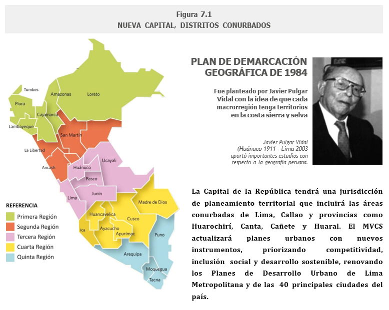
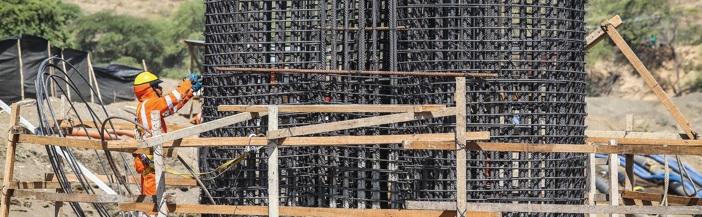
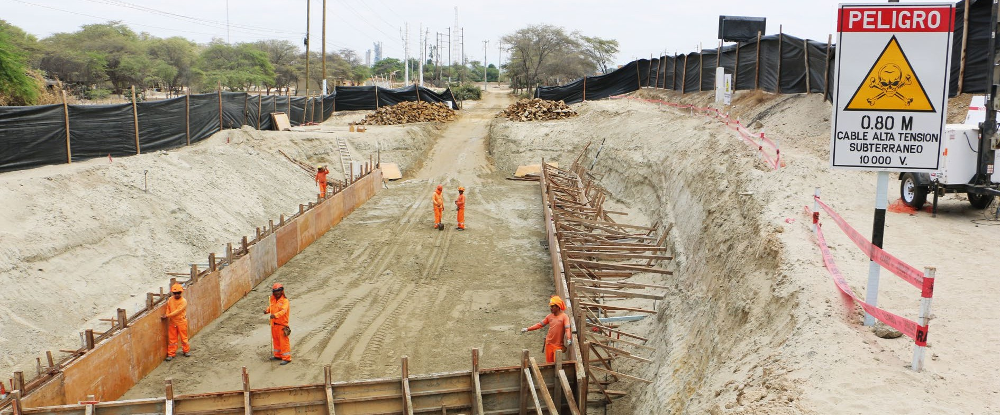
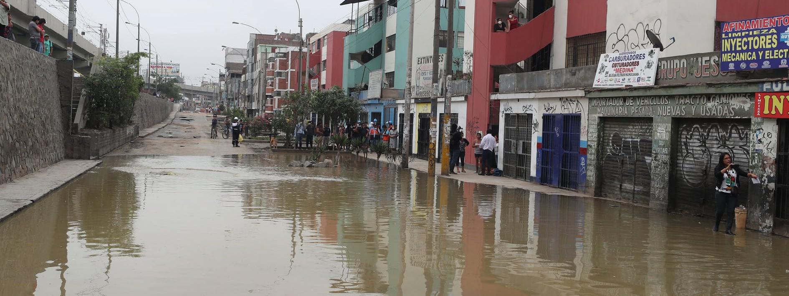
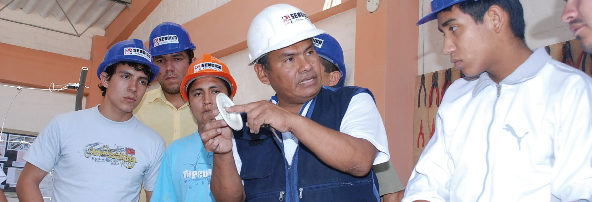
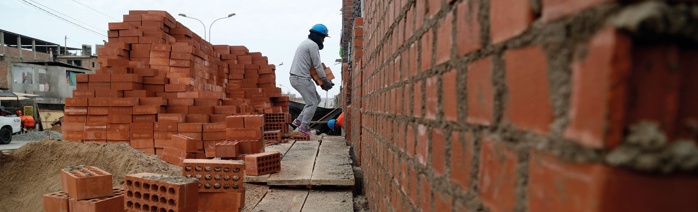
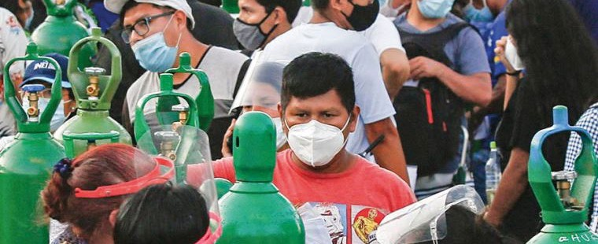

10 PARTE 7: PACTO POR LA CONSTRUCCIÓN DE UN PERÚ MEJOR
10.1 NECESIDAD DE TRANSFORMAR LA CONSTRUCCIÓN
El Pacto por la Construcción de un Perú Mejor es una iniciativa conjunta de la FTCCP y CAPECO para impulsar una profunda reforma de las políticas públicas relacionadas con la vivienda, la infraestructura y el desarrollo territorial, condición indispensable para que nuestro país pueda alcanzar el desarrollo sostenible.
Como se ha podido apreciar en las páginas previas de este libro, ambas instituciones han logrado establecer una relación de diálogo abierto y franco que ha permitido alcanzar mejoras en las condiciones de vida de los trabajadores de construcción y ha promovido de manera conjunta la paz laboral en la actividad constructora a nivel nacional, puesta a prueba por la acción de organizaciones criminales que actúan como seudosindicatos. En el marco de esta fructífera convergencia, desde el año 2015 ambas instituciones acordaron proponer conjuntamente soluciones integrales a los problemas que afectan, directa o indirectamente, a la actividad constructora y cuya persistencia ha impedido que el país logre mayores niveles de competitividad productiva y que el bienestar social alcance a todos los peruanos.

La FTCCP y CAPECO han establecido un diálogo abierto que mejora las condiciones de vida de los trabajadores y promueve la paz laboral frente a bandas delincuenciales. Desde 2015, ambas entidades proponen soluciones integrales para superar los problemas del sector, impulsando la competitividad productiva y el bienestar social en todo el país.
El Pacto pretende alcanzar los siguientes objetivos estratégicos.
Descentralizar el proceso de planificación territorial, así como procurar la óptima articulación entre los mega-proyectos productivos y de infraestructura con los objetivos de desarrollo territorial y de bienestar de la población.
Promover la planificación urbana, el sistema de catastros y la provisión de suelo formal, tanto público como privado, para la producción de vivienda, especialmente social, y de equipamientos urbanos.
Impulsar la articulación de inversiones en infraestructura y servicios públicos, con los objetivos de desarrollo urbano formal y de generación de oferta de vivienda, especialmente de aquella dirigida a la población de menores ingresos.
Adoptar un nuevo modelo de gestión de obras públicas para introducir mecanismos de priorización de inversiones, procesos de contratación y control más eficientes, para evitar la corrupción y tener un mejor desempeño de las infraestructuras en toda su vida útil.
Fortalecer los programas estatales de subsidios y créditos habitacionales, dotándolos de recursos suficientes para atender de manera efectiva el déficit actual y la demanda futura de vivienda social tanto en áreas urbanas como en zonas rurales.
Poner en marcha una política de innovación e investigación en la construcción, que estimule el empleo de tecnologías y de modelos de gestión que permitan contar con edificaciones e infraestructuras apropiadas en términos económicos, sociales y ambientales.
Perfeccionar los procedimientos administrativos de urbanización y edificación, así como la coordinación de competencias entre los diferentes niveles de gobierno, buscando promover la calidad y la seguridad de las construcciones.
Incrementar los ingresos municipales, especialmente del impuesto predial, mediante mecanismos más equitativos e incentivos para pagar obligaciones tributarias.
Propiciar la formalización laboral, el fortalecimiento de la representación sindical y la mejora continua de competencias de empresas, profesionales y trabajadores de la construcción, así como la lucha frontal contra la delincuencia y la violencia en obra.
Constituir espacios institucionalizados para un diálogo entre la sociedad y el Estado que sea transparente y permita la continuidad y el mejoramiento de políticas y planes estatales.
Para cumplir con las iniciativas del Pacto será necesario introducir cambios en distintos ámbitos de la normativa vinculada al desarrollo de la construcción. A continuación se detallan, objetivo por objetivo, tales propuestas de reforma.
10.2 PLANIFICACIÓN DESCENTRALIZADA Y ARTICULACIÓN DE MEGAPROYECTOS
Diagnóstico. El modelo de descentralización implementado en el país desde el 2002 no ha alcanzado los objetivos esperados de reducir las diferencias territoriales de desarrollo económico, bienestar social y equilibrio ambiental. Casi veinticinco años después de haber conformado veintiséis regiones transitorias, ha sido imposible reducir ese número como planteaba la Ley de Regionalización. Como consecuencia de ello, la acción del Estado se ha dispersado y debilitado a contrapelo del incremento del aparato burocrático. Se han transferido competencias y recursos pero no capacidades, y en el caso de la provincia de Lima en donde las atribuciones de gobierno regional son ejercidas por la Municipalidad Metropolitana de Lima, el proceso de transferencia de competencias está más retrasado en comparación con otras regiones, lo que se aprecia claramente, por ejemplo, en el hecho de que dicha instancia regional no tiene a su cargo la educación, la salud, ni el saneamiento, situación paradójica tratándose de la región comparativamente mejor preparada para ejercer dicha responsabilidad.
Asimismo, en el Callao, la Ley de Regionalización optó por un “modelo” distinto: desempeñar funciones en dicha circunscripción, el Gobierno regional y la municipalidad provincial, generando en muchos casos duplicidad de funciones y, en otros, ninguna de las dos autoridades tiene la responsabilidad de ejercerlas.
Por otro lado, el diseño y la gestión de la mayoría de megaproyectos productivos y de infraestructura presentan grandes dificultades debido a que, a pesar de tener como área de influencia directa a circunscripciones que pertenecen a más de una región, no han encontrado en la legislación actual sobre regionalización mecanismos que aseguren una buena gobernanza, lo que ha generado dificultades para su implementación y -en no pocas ocasionesconflictos entre regiones que han retrasado y hasta impedido su ejecución.
Propuesta. Si bien es políticamente poco viable modificar este esquema de “departamentalización” del actual modelo de regionalización, sí es posible e indispensable cuando menos impulsar un proceso de planificación territorial y sectorial que involucre a varios departamentos colindantes (que conformarían una “macrorregión”, equivalente a las regiones establecidas en la ley) y que permita una gestión concertada de megaproyectos y de otros factores territoriales que por su naturaleza y alcances excedan el ámbito de una región “departamento”.
Para descentralizar el proceso de planificación territorial y sectorial, así como para procurar la mejor articulación entre los megaproyectos productivos y de infraestructura con los objetivos de desarrollo equilibrado y de bienestar de la población, es necesario modificar la ley de creación del Centro Nacional de Planeamiento Estratégico–CEPLAN a fin de establecer el nuevo modelo de planificación y gestión antes señalado. Con ese propósito, es indispensable formular planes macrorregionales y gestionar coordinadamente los megaproyectos, las cuencas hidrográficas y los corredores económicos de cada macrorregión, así como las intervenciones para mitigar riesgos por fenómenos naturales o antrópicos que impactan en el territorio de cada una de dichas circunscripciones.
De esta manera, no solo se gana escala y coordinación en la implementación de planes y proyectos, sino que se pueden establecer prioridades de inversión, reduciendo sensiblemente la discrecionalidad con que cuentan actualmente las autoridades para decidir el destino de los recursos del Estado. Además, se corrigen las debilidades que tiene el actual modelo de regionalización y descentralización, sin quitarle competencias a los gobiernos subnacionales.
En línea con lo anterior, la reforma de la ley del CEPLAN deberá incluir la constitución de seis Entidades Autónomas de Planeamiento Territorial, una correspondiente a la Capital de la República y las otras cinco a partir de las Mancomunidades Regionales ya conformadas o de alguna otra propuesta de macrorregionalización como la planteada por Javier Pulgar Vidal.
Teniendo en cuenta que la Capital de la República ha superado largamente los límites administrativos de la provincia de Lima, la entidad autónoma correspondiente a la Capital nacional estará conformada por las áreas conurbadas de las provincias de Lima, Callao, Huarochirí, Canta, Cañete y Huaral. (FIGURA 7.1)

Esta reforma también deberá establecer que, sin perjuicio de la autonomía de estas entidades para formular sus planes y propuestas de desarrollo, aquellas dependerán funcionalmente del CEPLAN, entidad que fijará los lineamientos nacionales de desarrollo que deberán ser obligatoriamente incorporados a los planes macrorregionales; velará por la consistencia y complementariedad de estos planes; evaluará su cumplimiento mediante indicadores de desempeño y articulará sus resultados en una estrategia nacional de desarrollo.
Es igualmente necesario fortalecer técnica, económica e institucionalmente al CEPLAN para que pueda cumplir eficientemente con esta atribución. En particular, es conveniente que el Consejo Directivo de la entidad cuente con representantes de organizaciones relevantes de la sociedad civil, lo que permitirá adquirir una visión más integral de los desafíos por enfrentar y así definir mejor las alternativas de solución, además de darle una garantía de continuidad a las políticas e intervenciones, cuyos plazos de ejecución pueden exceder los periodos gubernamentales.
En ese marco, es importante que cada Entidad Autónoma esté a cargo de un Consejo Directivo, integrado por los gobernadores regionales (alcaldes provinciales en el caso de la Capital de la República), un representante del CEPLAN con rango de ministro de Estado y funcionarios de alto nivel de ministerios específicos que podrán diferir en cada macrorregión según su vocación productiva. Los instrumentos de planificación y gestión aprobados por estas entidades serán de cumplimiento obligatorio para las autoridades regionales y municipales, que mantendrán las competencias asignadas por el marco legal que regula la descentralización en el país.
En el caso de la Capital de la República, la Entidad Autónoma se encargará de la formulación de los planes y catastros urbanos; del planeamiento del sistema vial y de transporte (incluidas la red del Metro y la del Metropolitano); de la coordinación con los programas de inversión en servicios públicos de agua y desagüe; de la gestión de las áreas estratégicas de desarrollo urbano como la Costa Verde, las riberas de los ríos y las zonas de expansión de la ciudad; así como del diseño y ejecución de los megaproyectos urbanos como parques industriales o tecnológicos, centros de convenciones, distritos financieros, entre otros.
En cuanto al financiamiento de estas entidades, se debe establecer que el Gobierno Nacional otorgue recursos económicos para su funcionamiento, que se repagará con pequeñas tasas aplicables a los proyectos de desarrollo que se ejecuten en la respectiva macrorregión. Cada entidad contará con un equipo profesional de alto nivel y contratará, mediante concursos públicos, la formulación de los diferentes instrumentos de planificación y gestión.
Además, estas entidades también deberán diseñar e implementar planes urbanos y de desarrollo económico para la creación de nuevas ciudades en zonas de influencia de megaproyectos agroindustriales, logísticos, mineros o energéticos, así como para las localidades que conforman Ejes de Desarrollo Territorial, como el integrado por las ciudades de Barranca-Lima-Ica (a raíz del recientemente inaugurado Puerto de Chancay y del proyectado Tren de Cercanías que uniría dichas localidades), el que se constituirá en el Valle del Urubamba como consecuencia de la construcción del Aeropuerto de Chinchero o el que conforma el corredor minero que abarca varias provincias de los departamentos de Apurímac, Cusco y Arequipa.
Estos planes para nuevas ciudades deberán formularse e implementarse antes de la puesta en marcha de los megaproyectos que les dan origen, con la finalidad de que recojan las expectativas y necesidades de las poblaciones involucradas; que ayuden a alcanzar el consenso social en relación a los megaproyectos; y que permitan una adecuada priorización de inversiones públicas y privadas. Los recursos económicos para la ejecución de estos planes serán incorporados al presupuesto de inversión del megaproyecto, y asumido por el Estado o por la empresa a cargo de éste, dependiendo de las condiciones establecidas en los contratos de operación, concesión o de asociación público-privada.
A partir de este nuevo marco de planificación económica, social, ambiental y territorial se debe disponer que se formulen planes macrorregionales de infraestructura, que estén sujetos a la Política Nacional de Infraestructura que establezca los lineamientos de desarrollo territorial, identifique y priorice las principales necesidades a satisfacer, defina los mecanismos para gestionar las infraestructuras, determine las fuentes de financiamiento y los medios para repagar las inversiones y establezca indicadores para la medición del desempeño de los diferentes componentes de dichos planes.
Para garantizar el financiamiento y sostenibilidad de las infraestructuras es necesario que el Plan favorezca la legitimación del cobro de tarifas y peajes, para lo cual es necesario implementar un sistema de subsidios directos y explícitos a aquellas familias o usuarios que no puedan pagar las tarifas, previa verificación a través del Sistema de Focalización de Hogares (SISFOH) e inscripción en las centrales de evaluación crediticia. Esto también favorecerá la reducción del riesgo de corrupción en la asignación de recursos estatales.
Por último, la sede de esta entidad territorial será la capital de la región con menor índice de desarrollo humano o de competitividad.
10.3 PLANIFICACIÓN URBANA Y GESTIÓN DE SUELO
Diagnóstico. El país cuenta formalmente con un sistema urbano nacional, pero la totalidad de nuestras ciudades se han desarrollado sin obedecer a una planificación previa. No existe suficiente suelo urbano para el desarrollo de proyectos formales, debido a la obsolescencia de planes urbanos. En principio, los planes urbanos de casi todas nuestras ciudades están completamente desactualizados y, en la mayoría de los casos, ni siquiera se implementan modificaciones parciales de sus instrumentos de gestión para regular la ocupación ordenada de sus áreas de expansión. El caso de Lima Metropolitana es indicativo de esta problemática pues aprobó su último plan en el año 1990 abarcando las provincias de Lima y del Callao y debió ser reemplazado en el 2010. Sin embargo, recién en el 2019 se aprobaron separadamente los planes de desarrollo metropolitano de Lima y del Callao, los cuales todavía no han entrado en vigencia porque falta la aprobación de los planes urbanos a escala distrital en el caso del Callao y macrodistrital en el de Lima.
En segundo término, los grandes propietarios de suelo en las periferias de las grandes ciudades peruanas son las comunidades campesinas -que están impedidas por ley de transferir sus tierras para usos urbanosy el Estado, que tiene una actitud muy pasiva para defender sus predios y en algunos casos (como el de las Fuerzas Armadas) muestra una resistencia injustificada a poner en el mercado terrenos subutilizados. Evidentemente, estas restricciones solo rigen para el mercado formal, porque los traficantes y lotizadores informales pueden invadir, regularizar y vender con total impunidad. Las 68 mil hectáreas que, según GRADE, se incorporaron irregularmente a las áreas urbanas desde el 2001, explican el 93% del crecimiento de la expansión de las 43 ciudades más grandes del país y, de acuerdo a estimaciones de CAPECO, habrían significado un ingreso no menor de 20 mil millones de soles a estas organizaciones criminales.

Se plantea crear una entidad pública de gestión de suelo para incorporar terrenos estatales y comunales al mercado formal, habilitarlos urbanísticamente y transferirlos a promotores privados para proyectos integrales. Transformar el Programa de Generación de Suelo Urbano en una entidad autónoma permitiría financiar megaproyectos urbanos y promover vivienda social y equipamiento urbano.
Propuesta. Para evitar que esta situación se prolongue, se requiere promover la planificación urbana sostenible y una gestión de suelo que favorezcan el crecimiento orgánico de las ciudades y su articulación con el territorio, así como la generación de vivienda y equipamiento urbano formales. Ello exige un mayor involucramiento del Ministerio de Vivienda, Construcción y Saneamiento (MVCS) en la formalización, actualización y financiamiento de los planes de desarrollo de los centros urbanos en el país, empleando instrumentos innovadores de planificación, que busquen incrementar la competitividad de nuestras ciudades y extender los beneficios del crecimiento urbano a todos los ciudadanos. De manera urgente y prioritaria, debe impulsarse la actualización de los Planes de Desarrollo Urbano de Lima Metropolitana y de las ocho metrópolis regionales: Trujillo, Chiclayo, Piura, Arequipa, Huancayo, Cusco, Iquitos y Pucallpa.
Además, es necesario promover la creación de un Sistema de Información Catastral Urbana, también con financiamiento del Ministerio de Vivienda, lo que permitirá una adecuada toma de decisiones para identificar necesidades y potencialidades de cada ciudad, priorizar las obras públicas y generar oportunidades para la inversión privada en proyectos inmobiliarios y de infraestructura urbana.
Asimismo, es imprescindible la creación de un operador público de suelo nacional y de operadores públicos municipales en las ciudades que superen el millón de habitantes, lo que implicará la modificación de la Ley de Desarrollo Urbano Sostenible que encarga la función de operador nacional a Mivivienda S.A. y la asignación de recursos suficientes del presupuesto nacional para la constitución de operadores públicos en Lima Metropolitana, Arequipa y Trujillo. Estas entidades deberán identificar e incorporar los terrenos estatales y de las comunidades campesinas al mercado formal de suelo; invertir en la habilitación urbana de dichos predios; disponer la transferencia de estos terrenos habilitados a promotores privados para el desarrollo de proyectos urbanos integrales; y gestionar las plusvalías derivadas de las inversiones urbanas que desarrolle. Del mismo modo, podrán impulsar el desarrollo de proyectos inmobiliarios privados facilitando los cambios de zonificación, las factibilidades de servicios y otras autorizaciones.
El operador público nacional podría conformarse sobre la base del actual Programa de Generación de Suelo Urbano del Ministerio de Vivienda, mientras que, para el operador de Lima Metropolitana, habría que considerar que la Empresa Municipal Inmobiliaria de Lima S.A. – EMILIMA S.A. desempeñe esa función en el ámbito de la Capital de la República y del Callao. Estas entidades deberán contar con autonomía técnica, administrativa y financiera, así como con un modelo de gestión de excelencia, para lo cual sería recomendable promover la participación de alguna entidad multilateral (Banco Mundial, Banco Interamericano de Desarrollo, Corporación Andina de Fomento) en su organización y operación.
Por otra parte, es necesario implementar medidas administrativas para que terrenos estatales puedan ponerse a disposición del operador público de suelo, en particular los que sean de propiedad o se encuentren en uso de las Fuerzas Armadas y que ya no cumplen ninguna función militar sustantiva. Igualmente, se deben efectuar los cambios legislativos para permitir que las comunidades campesinas puedan destinar terrenos de su propiedad a fines habitacionales o de equipamiento, siempre que los planes urbanos así lo determinen.
Del mismo modo, se debe impulsar el desarrollo de proyectos habitacionales con énfasis en la vivienda para las familias de menores ingresos sobre terrenos privados, lo que podría viabilizarse si es que las áreas de intervención tienen una superficie apropiada y cuentan con factibilidades de servicios, lo que permitirá asegurar la integración social y espacial de familias de diferentes condiciones sociales y la incorporación de equipamientos productivos o de servicios.

Es urgente un marco normativo innovador que permita un modelo de gestión de obras estatales más eficiente y transparente. Se propone estandarizar requisitos técnicos según tipo y complejidad de obras, reduciendo la discrecionalidad en contrataciones y estableciendo criterios claros para empresas y equipos técnicos, mejorando los procesos de evaluación y control.
Se debe promover la ejecución de proyectos urbanos integrales, que incluyan preferentemente componentes de vivienda social, sobre terrenos privados disponibles, localizados tanto en zonas consolidadas como de expansión. Existen diferentes experiencias de este tipo en países cercanos como Brasil, Chile, Colombia o México. Para ello se requiere contar con mecanismos innovadores de gestión inmobiliaria, facilitación y simplificación administrativa.
En paralelo, hay que impulsar una estrategia comprehensiva para el mejoramiento integral de barrios urbano marginales, reduciendo la segregación socio-espacial, la precariedad de las viviendas, la falta de equipamiento y servicios básicos y generando oportunidades de desarrollo económico local. Este tipo de proyectos también son funcionales para disminuir la violencia y delincuencia urbanas, que se alimentan de la vulnerabilidad económica y social de quienes viven en estas condiciones, especialmente los niños y jóvenes
Resulta indispensable desarrollar programas de revitalización de centros históricos y de recuperación de barrios antiguos de las ciudades, que busquen la puesta en valor de inmuebles monumentales priorizando los usos contemporáneos que aseguren su sostenibilidad, la destugurización de predios inhabitables, la incorporación de residentes de ingresos medios en edificios reciclados o construidos sobre vacíos urbanos y la recuperación o creación de espacios públicos. Para ello, es necesario reforzar la seguridad pública coordinando los esfuerzos de la Policía, el serenazgo y la vigilancia privada; impulsar inversiones públicas para la modernización de los servicios básicos; otorgar subsidios de mayor valor tanto para los programas de destugurización como los de vivienda para la clase media; facilitar los trámites para el desarrollo de proyectos privados; y desarrollar una estrategia de marketing urbano para favorecer el turismo y la actividad comercial en estos centros.
Por otro lado, se requiere promover inversiones en servicios básicos para impulsar la oferta formal de vivienda y equipamientos urbanos. Para ello se debe crear, con recursos del Ministerio de Vivienda, un fondo concursable para financiar la provisión de estos servicios en proyectos inmobiliarios que tengan un importante componente de vivienda social. De esta forma, se generaría un mayor interés del sector privado en el desarrollo de estas iniciativas debido a que, actualmente, una de las principales barreras para incursionar en este segmento de mercado es que las empresas prestadoras de servicios públicos y el propio Ministerio de Vivienda concentran las inversiones para atender a los asentamientos humanos informales. Además, es necesario impulsar asociaciones público-privadas para el financiamiento de la renovación de redes de agua potable y saneamiento en áreas urbanas con potencial inmobiliario, a fin de asegurar la existencia de una oferta inmobiliaria formal.
Finalmente, se debe establecer incentivos para la “zonificación verde”, que considere la localización de actividades urbanas en zonas que se deseen preservar siempre que los operadores de tales actividades se comprometan a reservar y mantener una proporción apreciable de dichas áreas como espacios públicos verdes.
10.4 SERVICIOS PÚBLICOS Y DESARROLLO URBANO FORMAL
Diagnóstico. El modelo de provisión de servicios públicos, especialmente los de agua, desagüe y tratamiento de aguas servidas actualmente vigente, es insostenible y promueve la informalidad. Las estrategias de gestión de las cincuenta empresas prestadoras de servicios (EPS), existentes a nivel nacional siguen únicamente a la “invasión” y la mayor parte de sus inversiones se hacen con dinero del Ministerio de Vivienda, sin obligación de reembolso, lo que les permite mantener -por cálculos políticostarifas irrisorias que no cubren los costos de operación y mantenimiento ni el repago de las inversiones efectuadas con recursos del tesoro público. Como consecuencia de ello, según el Ministerio de Vivienda, en el 2024 aproximadamente 3.4 millones de peruanos carecían del servicio de agua potable por red pública y 7.6 millones no disponían de redes de alcantarillado. Además, solo el 42% de la población (4% en las zonas rurales) disponía de agua segura, entendida como aquella que contiene cloro en proporciones adecuadas.
En tanto, en las áreas urbanas atendidas por las EPS, el 78% de aguas residuales recibe tratamiento, pero hay una gran disparidad en el desempeño de tales entidades. SEDAPAL ha logrado elevar esa proporción a 91% en Lima Metropolitana, mientras que las EPS medianas solo llegan al 32% y las pequeñas al 6%.
Estos indicadores muestran la precariedad en que se encuentra la infraestructura de agua y saneamiento en nuestro país que, de acuerdo con el Banco Mundial, disputa los últimos lugares en Sudamérica con Bolivia y Ecuador. Esta situación crítica es difícil de entender si se considera que el Perú es el octavo país del mundo con mayor cantidad de agua dulce y que se ha invertido más de 61 mil millones de soles entre el 2010 y el 2021 para extender la cobertura, la cantidad y la calidad de estos servicios.
Como se puede observar, la imposibilidad de alcanzar el acceso universal a los servicios de saneamiento no puede atribuirse a la falta de recursos naturales ni económicos. Se trata más bien de la persistencia de un modelo regresivo e insostenible de inversión y gestión que reproduce un verdadero “círculo perverso” del agua. Este “modelo” se sustenta en el establecimiento de tarifas crecientemente desfasadas, lo que no permite cubrir los costos de operación, mantenimiento ni repago de las infraestructuras, obligando al gobierno nacional a cubrir esa “brecha de inversión” mediante la transferencia de recursos a fondo perdido a los operadores del servicio (EPS, municipalidades, organizaciones comunales) lo que se convierte en un subsidio generalizado e indiscriminado que favorece a los que más consumen; perjudica a los más pobres, quienes reciben servicios caros, precarios e inseguros; desalienta la innovación y la excelencia entre los operadores; y pone en peligro las fuentes de agua, así como la infraestructura de alcantarillado y tratamiento de aguas residuales.
Este “círculo perverso” refuerza un patrón de crecimiento urbano irregular, como se señaló en la Parte 2, página 45. Para avanzar hacia un desarrollo urbano formal y sostenible, resulta indispensable articular las inversiones en infraestructura con la provisión eficiente de los servicios públicos, asegurando coherencia entre planificación, financiamiento y gestión.

El sinceramiento gradual de tarifas de agua y saneamiento garantizará la sostenibilidad de las EPS, acompañado de subsidios para familias vulnerables. Las inversiones en drenaje pluvial y tratamiento de aguas deben considerar costos integrales y su repago. Las APP y mecanismos como obras por impuestos o pagos en agua son clave para renovar redes e impulsar la inversión privada.
Propuesta: Para terminar con este círculo vicioso se requiere desarrollar una estrategia integral con enfoque territorial. En ese contexto, es indispensable promover la fusión de EPS (actualmente son cincuenta, de las cuales cinco están en Puno y otras tantas en Junín, mientras que en Cusco, Lima provincias e Ica cuentan con cuatro cada una) para ganar economías de escala y aprovechar mejor las fuentes de agua. Además, resulta necesario modificar la conformación y las competencias de los actuales Consejos Directivos de las empresas, ya que su estructura actual favorece un manejo politizado y fragmentado de la gestión. El modelo de las Cajas Municipales podría servir de referencia para garantizar un gerenciamiento eficiente de estas empresas.
También urge sincerar de manera gradual las tarifas que cobran las EPS, a fin de garantizar la sostenibilidad de las inversiones y evitar el deterioro de la calidad del servicio. Paralelamente, una parte de los recursos que actualmente destina el Ministerio de Vivienda debe reorientarse al otorgamiento de subsidios directos para los hogares de bajos ingresos que no puedan asumir, parcial o totalmente, el incremento tarifario.
Se propone, además, que los proyectos financiados por el gobierno nacional para la implementación de redes de agua y desagüe en barrios marginales y centros poblados rurales sean seleccionados mediante concurso público, priorizando aquellas localidades con necesidades más urgentes y donde se evidencie una mayor participación de las comunidades y de las municipalidades. Igualmente, estas intervenciones deben incluir componentes de capacitación y seguimiento, con el fin de garantizar la sostenibilidad de los servicios en el tiempo.

Para incentivar los servicios públicos y el desarrollo urbano formal, también se plantea una atención diferenciada. Los servicios de agua y saneamiento deben integrarse en proyectos que incluyan vivienda, energía y fortalecimiento de capacidades locales, considerando soluciones en red para los centros poblados y alternativas autónomas para las comunidades dispersas.
En las zonas rurales, los servicios de agua y saneamiento deben formar parte de proyectos integrales que incluyan también la construcción de viviendas, la provisión de energía y el fortalecimiento de las capacidades locales para el desarrollo de actividades productivas. Estas intervenciones deben reconocer las diferencias entre la población rural que habita en centros poblados y aquella que vive dispersa. En el primer caso, corresponde implementar soluciones mediante pequeñas redes domiciliarias; en el segundo, será necesario optar por alternativas autónomas adecuadas a las condiciones del entorno.
Por otro lado, resulta imprescindible la creación de un Fondo de Inversión en el Ministerio de Vivienda, destinado a financiar proyectos urbanos integrales que incluyan un fuerte componente de oferta de vivienda de interés social. Esta medida contribuiría a desalentar la ocupación informal del suelo, una de las principales causas del encarecimiento de los servicios y de las dificultades para ampliar su cobertura. La asignación de estos fondos debería realizarse mediante concursos públicos que promuevan la generación de oferta habitacional en aquellas localidades donde esta es escasa o en las que existe una alta demanda insatisfecha.
Complementariamente, resulta fundamental promover asociaciones público-privadas (APPs) para la ampliación de fuentes de agua, la construcción de obras de desagüe y la renovación de redes en zonas con alto potencial de desarrollo residencial, donde, de manera cada vez más recurrente, no se otorgan factibilidades de servicios debido a la falta de priorización de inversiones, lo que limita significativamente la expansión de la oferta inmobiliaria y frena el crecimiento urbano ordenado. En estos casos, el retorno de las inversiones puede efectuarse mediante mecanismos como el pago a través del consumo de agua o, cuando sea posible, mediante aportes no reembolsables que se transfieran a los precios de las unidades inmobiliarias.
En el caso de las ciudades del interior, especialmente aquellas afectadas por desastres naturales, este modelo requerirá del cofinanciamiento del Ministerio de Vivienda para su implementación. Asimismo, puede recurrirse a la modalidad de obras por impuestos para atender la provisión de estos servicios en zonas con alta demanda de vivienda orientada a sectores pobres no extremos o en aquellas que requieren intervenciones de mejoramiento de barrios marginales.
En cuanto a las inversiones requeridas para incrementar el tratamiento de aguas servidas y, sobre todo para dotar de instalaciones de drenaje pluvial, estas deberán considerar desde un inicio los costos de construcción, operación y mantenimiento y el repago de dichos montos a través de las tarifas. Por último, hay que impulsar la adopción de nuevas tecnologías (como la desalinización del agua de mar o el reúso de aguas tratadas para el riego de parques y jardines) en grandes proyectos urbanos como parques industriales, instalaciones portuarias, zonas balnearias o urbanizaciones de playa o campo.
Terminar con este círculo perverso debe ser parte de un acuerdo político y social que comprometa a las sucesivas administraciones gubernamentales a desarrollar y -eventualmente ajustar la estrategia integral propuesta, y que reduzca sensiblemente el riesgo de politizar o desvirtuar su ejecución.
10.5 GESTIÓN DE INFRAESTRUCTURA Y EQUIPAMIENTOS PÚBLICOS
Diagnóstico. La inversión pública, en todas sus modalidades, enfrenta graves limitaciones para su ejecución, como resultado de factores estructurales que deben ser abordados desde una perspectiva integral. Las crecientes dificultades para una gestión eficiente, sostenible, transparente y de calidad se deben principalmente a que la normativa de contratación pública es obsoleta, “iguala para abajo” (es decir, no valora la innovación ni la calidad técnica de las propuestas, ni evalúa el desempeño a lo largo de la vida útil de los proyectos) y, además, es permeable a la corrupción. Desde hace varios años, el Estado ha intentado resolver estos problemas mediante constantes modificaciones a la normativa de contratación pública, sin obtener resultados favorables.
Frente a este fracaso, para ejecutar obras importantes o urgentes, ha resuelto por exceptuarlas de la normativa nacional. Primero, recurrió a encargar la contratación a entidades internacionales, como la Oficina de las Naciones Unidas de Servicios para Proyectos (UNOPS) o la Organización Internacional para las Migraciones (OIM). Después, optó por la suscripción de convenios de Gobierno a Gobierno (mediante los cuales se encarga el proceso de licitación a un órgano de contratación de un tercer país) o por empaquetar obras a través de “proyectos especiales”. Ninguna de estas soluciones alternativas ha demostrado ser eficiente ni resulta viable su generalización, debido a la complejidad y diversidad de las infraestructuras y edificaciones involucradas.
A ello se suma la dispersión y la diferencia de capacidades técnicas de las entidades estatales encargadas de ejecutar obras públicas, lo que no garantiza una adecuada selección, supervisión, operación ni mantenimiento de las infraestructuras y edificaciones resultantes. En el Perú existen 1,874 distritos, de los cuales el 56% tenían un máximo de 5,000 pobladores en el 2017, según el censo de población efectuado por el INEI en ese año. De las 196 provincias, el 40% estaban pobladas por menos de 50 mil habitantes. Incluso, que el país cuente con 26 regiones parece excesivo e ineficiente, como se ha señalado en la Parte 7, página 227 de esta publicación. Al existir diferencias y superposiciones entre las competencias y facultades de estas instancias sub-nacionales, la calidad y oportunidad del gasto público se ven gravemente afectadas. También influye el mecanismo de distribución del canon y las regalías que no considera la capacidad de gestión de los gobiernos regionales o municipales, lo que contribuye a profundizar la ineficiencia, comprometer la sostenibilidad de las inversiones y ampliar los márgenes para la corrupción.
Adicionalmente, las normas de contratación pública otorgan un alto grado de discrecionalidad a los funcionarios responsables de liderar los procesos de adjudicación y ejecución de obras. Sin embargo, la precariedad laboral que impera en el Estado hace que los funcionarios honestos se cohíban de tomar decisiones -lo que explica la frecuente derivación de controversias, incluso las más evidentes, al fuero arbitralque los corruptos encuentren en ese amplio margen de decisión un incentivo para delinquir; y que los profesionales calificados pierdan interés en incorporarse al servicio público.
Medidas como la imprescriptibilidad o el incremento de sanciones para quienes cometen delitos funcionales son un ejemplo del efecto perverso de la forma en que se gestionan los riesgos de corrupción en el sector público, disposiciones que además desalientan el ingreso de empresas solventes e íntegras para la ejecución y operación de infraestructuras y edificaciones estatales.
Todo lo señalado genera un alto nivel de ineficiencia en la ejecución de los presupuestos públicos de inversión. Así, entre los años 2022 y 2024 se invirtieron 151 mil 664 millones de soles, pero se dejaron de ejecutar 48 mil 904 millones de soles en ese mismo periodo, es decir, un 24.4% del presupuesto de inversión total del Estado. Además, de acuerdo con cifras de la Contraloría General de la República, al 31 de diciembre del 2024 se encontraban paralizadas 2,476 obras por un valor de 43 mil 119 millones de soles, quedando pendiente de ejecutar alrededor de 48% de la inversión total prevista. Cabe señalar que en las municipalidades se concentra el 72% de las obras detenidas, mientras que en los gobiernos regionales el 40.5% de la inversión total se encuentra paralizada (Figura 7.2).
Otro problema es que el modelo de gestión de obras públicas también es obsoleto porque no incorpora criterios de eficiencia ni utiliza las herramientas tecnológicas disponibles para planificar, ejecutar y supervisar proyectos. Además, no está preparado para manejar el volumen de obras que ejecuta el Estado. No se realiza un seguimiento integral de las infraestructuras y edificaciones a lo largo de todo su ciclo de vida, desde las etapas iniciales de diseño hasta el fin de su operación. Como resultado, muchas de estas no alcanzan a cumplir su vida útil, debido a deficiencias en los procesos de selección y ejecución, así como a la falta de mantenimiento.


La inversión pública enfrenta serias restricciones derivadas de factores estructurales, entre ellos un marco de contratación obsoleto. Pese a múltiples ajustes normativos en los últimos años, estos problemas persisten y limitan la eficiencia, sostenibilidad y transparencia en la ejecución de obras.
Los diversos mecanismos que se han implementado para el seguimiento y control de infraestructura presentan de las mismas limitaciones que la contratación pública “tradicional”, lo que muchas veces termina agravándolas en lugar de superarlas. Es lo que viene ocurriendo con el modelo de control concurrente que ejerce desde hace algunos años la Contraloría General de la República. Se trata de una excelente idea pero que, debido a que su ejecución se sustenta sobre herramientas convencionales, no llega a cumplir cabal ni oportunamente su función.
Asimismo, debe señalarse que los intereses de los actores públicos no se encuentran debidamente alineados con el propósito de una contratación transparente, una ejecución eficiente y una operación sostenible. Ello en razón de que las decisiones clave son tomadas por las autoridades, prácticamente sin ningún control independiente. Ellas pueden decidir qué proyectos ejecutar; sus funcionarios pueden formular y aprobar su viabilidad; encargar y autorizar la elaboración de expedientes técnicos y las bases de licitación, así como seleccionar a los ejecutores. Además, ellos mismos reciben y operan las infraestructuras y edificaciones resultantes y asignan (o no) recursos para su mantenimiento.
En los dos últimos años, el Estado ha decidido volver a impulsar la iniciativa privada en la gestión de la inversión pública, especialmente a través de asociaciones público-privadas (APP) o proyectos en activos estatales (PA) y la ejecución de inversiones estatales mediante el mecanismo de obras por impuestos (OxI), con resultados muy alentadores.
En el caso de las APP y de los PA, en el año 2023, Proinversión adjudicó proyectos por 2,332 millones de dólares monto superior en 62% al acumulado en los seis años previos; y la ejecución en el año 2024 alcanzó los 8,956 millones de dólares, casi tres veces más que lo ejecutado en el año precedente. Además, para el bienio 2025-2026, Proinversión ha presupuestado conceder proyectos por 16,641 millones de dólares. Respecto a obras por impuestos, en el año 2024 se entregaron 4,204 millones de soles en proyectos, cifra similar al total invertido en los siete años precedentes. Para los siguientes años, Proinversión ha establecido en 46 mil millones de soles el tope de inversiones a ejecutar por los gobiernos subnacionales y las universidades públicas a través de OxI. Es evidente que estos mecanismos constituyen una buena alternativa para superar los problemas identificados en la obra pública, pero cuya aplicación requiere de medidas específicas que señalen el alcance y las condiciones en que pueden sustituir a los convencionales.
Propuesta. Se necesita un marco normativo innovador que facilite la adopción de un nuevo modelo de gestión de obras estatales, junto con procedimientos de contratación y control más eficientes y transparentes. No basta con enfocarse únicamente en los procesos de licitación, sino también en generar eficiencia en todas las etapas del ciclo de vida de los proyectos de infraestructura y equipamiento: planificación, priorización, contratación, diseño, construcción, supervisión, operación, mantenimiento y cierre. Cabe destacar que alrededor del 80% de la inversión en infraestructura se concentra en la fase de operación y mantenimiento, por lo que la mayor ganancia en eficiencia (o, inversamente, la mayor pérdida potencial) se presenta en esta instancia. A continuación se detallan las principales propuestas correspondientes de cada una de las etapas antes señaladas.
Planificación. Como ya se ha señalado en la página 227 de esta misma Parte, debe establecerse una planificación macrorregional de infraestructuras articulada con los planes de desarrollo territorial. Además de un Plan Nacional de Infraestructura, es necesario formular planes regionales y provinciales que orienten las inversiones con un enfoque territorial y una escala adecuada, de modo que se garantice la coherencia entre los distintos niveles de planificación y se optimice el uso de los recursos públicos.

Es fundamental formular planes regionales y provinciales que orienten las inversiones con enfoque territorial y escala adecuada, asegurando coherencia entre los distintos niveles de planificación y un uso óptimo de los recursos públicos.
Priorización. En primer lugar, es trascendental reformular el sistema de evaluación de la inversión pública con el objetivo de priorizar los proyectos de infraestructura y edificación estatales a partir del mayor impacto territorial y no del monto de inversión más alto, poniendo énfasis especial en la etapa de operación y no en la de preinversión como ocurre actualmente.
Muchos proyectos de infraestructura no alcanzan sus objetivos porque no se ejecutan simultáneamente obras complementarias. Por ejemplo, un proyecto como el Tren de Cercanías Barranca-Lima-Ica tendría mucho más impacto si es que se desarrollan paralelamente parques industriales, instalaciones logísticas o de servicios en las doce ciudades que conforman dicho eje. Esto permitiría ahorrar tiempo en los procesos previos a la licitación, pero por sobre todo, otorgaría al Estado mejores niveles de rentabilidad y eficiencia de los proyectos, contribuyendo, además, a un afinamiento continuo de los criterios de evaluación.
De otro lado, las obras que se financian mediante transferencias del Gobierno nacional a los gobiernos regionales y locales, deben ser seleccionados a través de fondos concursables, que hagan posible elegir aquellos que atiendan a la mayor necesidad o a la generación de mejores oportunidades de desarrollo. También se debe dar prioridad a inversiones en infraestructuras y servicios públicos dirigidos a promover una oferta formal de vivienda, especialmente de aquella destinada a la población de menores ingresos, como ha sido advertido en la Parte 4, página 51.
Asimismo, el Estado debe impulsar el desarrollo de APP y del mecanismo de OxI para la gestión de infraestructura y equipamiento. Estas modalidades no solo permitirían incorporar tecnología sino también concentrar una parte sustantiva de los esfuerzos del Estado en la supervisión a través de organismos reguladores independientes y no en la ejecución directa de obras; además de promover un uso más eficiente de los recursos que podrían orientarse en proyectos dirigidos a sectores vulnerables dejando al sector privado aquellos que tengan un retorno económico previsible. Para este último caso, es imprescindible un manejo altamente profesional de las tarifas que sustenten dichos proyectos. Este enfoque contribuye a reducir la necesidad de financiamiento público directo y, en consecuencia, a controlar el déficit fiscal.
Contratación. Es necesario evaluar si resulta conveniente mantener una única ley que regule tanto la adquisición de bienes y servicios como la contratación de obras públicas. Las diferencias entre ambos procesos son sustanciales, especialmente en lo que respecta a los criterios de evaluación y selección de propuestas técnico-económicas y de postores ganadores. Mientras que en la contratación de obras intervienen aspectos técnicos complejos y riesgos de ejecución mayores, la compra de bienes y servicios suele seguir procedimientos más estandarizados. En este contexto, conviene analizar retrospectivamente si las razones que justificaron la unificación del marco normativo siguen siendo válidas, a la luz de más de tres décadas de vigencia.
Del mismo modo, la selección de propuestas debe basarse en el desempeño durante toda la vida útil de las obras, y no solo en el menor costo o plazo de construcción de obras o formulación de estudios. La Federación y CAPECO han señalado reiteradas veces que el desempeño y los menores costos de mantenimiento durante la etapa de operación deben tener un peso relevante al momento de evaluar las propuestas. Está claro que, en la mayoría de casos, las ofertas más económicas no son necesariamente las mejores, y menos aún cuando la selección del postor ganador se resuelve por sorteo, como sucede con frecuencia en la actualidad. Por ello, es necesario establecer criterios de precalificación que consideren la capacidad técnica y la experiencia de los participantes, evitando “bajar la valla” para propiciar un mayor número de postulantes. La normativa debe promover la competencia entre los postulantes mejor calificados y no necesariamente entre un número elevado de ellos. Contrariamente a lo que se piensa, al flexibilizar las condiciones técnicas se desalienta a las contratistas o consultores de mayor experiencia y se incrementa el riesgo de no escoger la mejor alternativa.

Es necesario implementar la Ley de Regulación de Habilitación Urbana y Edificación, dictando normas complementarias que fortalezcan el control de proyectos, reduzcan la discrecionalidad municipal y refuercen el rol del Ministerio de Vivienda como ente rector, promoviendo la transparencia y limitando espacios para la corrupción. en el desarrollo urbano.
También es prioritario homologar los requisitos técnicos para la evaluación de propuestas, en función del tipo y complejidad de obras, para reducir de forma significativa el peligrosamente alto nivel de discrecionalidad que tienen los funcionarios encargados de los procesos de contratación para tomar decisiones. Es necesario estandarizar, al menos, los requerimientos que deben cumplir las empresas y los equipos técnicos, previa clasificación de las obras.
Asimismo, es urgente asegurar la igualdad de condiciones para la participación de las empresas peruanas y extranjeras en los procesos de contratación pública. La normativa actual es excesivamente flexible con las exigencias a las empresas extranjeras, lo que no solo perjudica a las nacionales, sino que también pone en riesgo la adecuada ejecución de las inversiones públicas.
A su vez, es necesario diseñar nuevos contratos (basándose en los formatos NEC, FIDIC o similares), optimizar los mecanismos de solución de controversias, facilitar y coordinar las tareas de supervisión y control de obra (incluyendo las que realiza la Contraloría General de la República, bajo la modalidad de control concurrente) e implementar procedimientos que garanticen una adecuada operación y mantenimiento de las edificaciones e infraestructuras en todo su ciclo de vida.
De igual forma, es indispensable reducir el número de ejecutores de obras públicas mediante un sistema de acreditación de competencias, para evitar la dispersión de inversiones y
mejorar la calidad del diseño, ejecución y control de los proyectos. La contratación y ejecución de proyectos deberá concentrarse, hasta donde sea posible, en las entidades del Gobierno central, los veintiséis gobiernos regionales, las municipalidades que albergan a los 40 centros urbanos más poblados del país y en aquellos distritos que son económicamente autosuficientes o cuentan con potencialidades productivas relevantes. Todos ellos deberán contar con equipos técnicos acreditados por entidades independientes, conforme a las regulaciones internacionales de calidad en la gestión (normas ISO), que garanticen la capacidad necesaria para conducir adecuadamente los proyectos de infraestructura y equipamiento.
El resto de entidades subnacionales deberá encargar los procesos de preinversión y contratación solo a aquellas instituciones que se encuentren acreditadas, cumpliendo el principio de subsidiariedad en la gestión del Estado. En ese caso, cada una de estas entidades mantendrá las decisiones referidas a la gestión de su presupuesto, priorizará las inversiones que se efectúen con sus recursos y se encargará de la operación y el mantenimiento de las infraestructuras, idealmente bajo la figura de empresas comunales o núcleos ejecutores, tareas que serán supervisadas por la entidad que llevó adelante el proceso de selección.
De otra parte, se debe garantizar la autonomía de los comités especiales de contratación, incorporando uno o dos miembros de los tres que los conforman que pertenezcan a un cuerpo de gerentes públicos especializados en compras estatales dependientes de la Autoridad Nacional del Servicio Civil - SERVIR y acreditados por los colegios profesionales de ingenieros y arquitectos. Esto permitiría reducir la influencia del titular de la entidad contratante en la actuación de estos comités, garantizar la toma de decisiones técnicas, uniformizar los criterios y la aplicación de la normativa, todo ello sin necesidad de quitarle a las entidades ejecutoras sus competencias.
Respecto a las obras pequeñas y proyectos financiados mediante transferencias del Gobierno Central, se plantea el uso de fondos concursables como se sugiere en la Parte 7 página 234. Para ello, las entidades nacionales responsables del financiamiento deberán estandarizar previamente los tipos de intervención, los montos máximos por proyecto, el número estimado de beneficiarios y las principales especificaciones técnicas de diseño de ingeniería, y de fortalecimiento comunal y municipal. Asimismo, deberán acreditar a las empresas o equipos técnicos que se encargarán de los proyectos y obras, asegurando su idoneidad profesional y solvencia económica. Después de esas acciones, se convocará a concurso a los proyectos en fase de perfil, elaborados por los ejecutores acreditados, que previamente deben haber suscrito convenios con el gobierno local y con la comunidad en la que se ubicará la futura obra. Luego de seleccionadas las propuestas ganadoras, se entregarán los recursos para desarrollar los expedientes técnicos correspondientes y una vez que estos sean aprobados, se iniciarán las obras y se efectuarán los pagos a cuenta de acuerdo con el avance de los trabajos de construcción.
Por otro lado, resulta fundamental establecer con claridad el marco normativo para la ejecución de obras por administración directa, una modalidad que ha sido distorsionada y carece de mecanismos de control eficaces. Esta situación ha dado lugar a graves casos de corrupción, deficiencias en la ejecución y baja calidad de las obras. Su aplicación debe limitarse estrictamente a situaciones en las que la entidad pública cuente con capacidades técnicas demostradas, exista una circunstancia excepcional que impida realizar un proceso regular de contratación y se trate de intervenciones de pequeña escala y baja complejidad.
En todas las circunstancias, el diseño, la ejecución y la supervisión de las obras deberán estar a cargo de profesionales certificados por los colegios de arquitectos y de ingenieros que, además, deberán constituir Comisiones Técnicas Provinciales que aprobarán la idoneidad de los expedientes técnicos y certificarán la culminación de las obras. Estos órganos colegiados actuarán de manera similar a las comisiones técnicas ya existentes en las municipalidades y que emiten opinión vinculante para el otorgamiento de licencias de obras y declaratoria de fábrica en el caso de proyectos privados de habilitación urbana y de edificación.
Diseño, construcción y supervisión. En las obras grandes y medianas, es importante incorporar el mecanismo de diseño colaborativo en los proyectos de construcción, reemplazando el diseño secuencial y segregado que hasta ahora predomina en la normativa técnica nacional. Esta metodología permite que la entidad contratante primero defina los objetivos y alcances que se persiguen con una determinada infraestructura o edificación; luego invite a las empresas que tienen la capacidad, la experiencia y el interés de ejecutar la obra; y, finalmente, interactúe con ellas para ir perfilando las especificaciones técnicas. De este modo, el proyecto se enriquecerá de manera sistemática y transparente con los mejores planteamientos de los postores hasta alcanzar la mejor alternativa, y permitirá que todos cuenten con información relevante sobre el proyecto, facilitándoles la formulación de sus propuestas y propiciando que el proceso de contratación se dé en un marco de igualdad de oportunidades.
De igual forma, es necesario implementar herramientas innovadoras para la solución de controversias durante la preparación y ejecución de obras, sin que ello implique su paralización. Uno de estos mecanismos es la Junta de Resolución de Disputas, que permite resolver desacuerdos de manera oportuna y técnica, evitando la paralización de las obras y el uso desproporcionado e injustificado de los arbitrajes, los cuales suelen generar demoras e incertidumbre respecto a la culminación de los proyectos.
Adicionalmente, es fundamental promover la innovación tecnológica en la gestión de proyectos públicos de infraestructura y edificación. Para ello, se debe avanzar en la implementación progresiva de la metodología Building Information Modeling (BIM) en proyectos grandes y medianos, así como de una plataforma digital para el control y seguimiento de obras de pequeña dimensión. Cabe señalar que, por recomendación de CAPECO, en el Decreto Legislativo Nº 1444 del año 2018 que modificaba la Ley de Contrataciones del Estado entonces vigente, se dispuso “la incorporación progresiva de herramientas obligatorias de modelamiento digital (NdE referencia al modelo BIM) de la información para la ejecución de la obra pública que permitan mejorar la calidad y eficiencia de los proyectos desde su diseño, durante su construcción, operación y hasta su mantenimiento”.
Para lograr la incorporación de esta metodología, se requiere transformar aspectos sustanciales de los procesos estatales de contratación de obras, particularmente en lo referido a la evaluación de propuestas técnico-económicas, la modificación oportuna de las especificaciones técnicas antes y después de la ejecución, la pertinencia y estimación de adicionales o reducciones presupuestales o ampliaciones de plazo del proyecto, así como la naturaleza y alcances de la supervisión y control de obras. Además, será necesario un plan que establezca los estándares de la metodología para el BIM, las condiciones que deberán tener las entidades públicas para iniciar ese proceso, los incentivos y el financiamiento que recibirán dichas entidades, así como la adaptación de los diferentes sistemas de gestión pública de inversiones al modelo BIM, entre ellos el de inversión pública, el de presupuesto y el de supervisión y control.
En cuanto a las obras pequeñas, la implementación del BIM no es viable, por lo que debe procurarse cuando menos la implementación de un registro digital centralizado que controle el desempeño de los proyectos en todo su ciclo de vida y no solo en las fases de contratación y ejecución de obra.
También se necesita incorporar alternativas para el financiamiento de obras que permitan superar las dificultades que enfrentan actualmente los contratistas en la obtención de fianzas bancarias que garanticen el fiel cumplimiento de las obligaciones contractuales y el uso adecuado de los adelantos de obra. Esta problemática se origina, en gran medida, por la imprevisibilidad de los flujos financieros y del plazo de terminación de un número significativo de obras, motivada principalmente por el uso desproporcionado e injustificado de los arbitrajes para resolver controversias.

Se propone modificar la restricción que limita el uso del fideicomiso solo a la administración de adelantos a los contratistas, permitiendo aplicarlo a toda la ejecución de la obra. Su implementación parcial ha impedido aprovechar plenamente esta herramienta para fortalecer la eficiencia, la transparencia y el control en la gestión de proyectos.
De igual forma es indispensable modificar la actual restricción que limita el uso del fideicomiso únicamente a la administración de adelantos otorgados a los contratistas, para permitir su aplicación a toda la ejecución de la obra. Esta herramienta, introducida hace algunos años en la legislación de contratación pública, fue incorporada de manera parcial, lo que ha impedido aprovechar su potencial para mejorar la eficiencia, transparencia y control en la gestión de proyectos.
Para obras de menor escala, en las que el fideicomiso no es viable debido a los altos costos que implica su constitución, puede implementarse un modelo basado en el control del flujo financiero por parte de un tercero especializado, como una entidad bancaria. En este mismo sentido, el Estado podría otorgar garantías complementarias a las instituciones financieras con el fin de reducir la percepción de riesgo que estas tienen respecto de la previsibilidad de las inversiones públicas.
A la par, es importante fomentar esquemas de control cruzado en los procesos de gestión de obras públicas, especialmente durante la fase de contratación. Esta estrategia busca alinear los intereses de los actores públicos y privados en favor de una contratación transparente, una ejecución eficiente y una operación sostenible de las infraestructuras y edificaciones.
Con ese objetivo, se propone incorporar en dichos procesos a la Asociación de Bancos del Perú-ASBANC y Asociación Peruana de Empresas de Seguros–APESEG para la constitución y administración de una plataforma en la que se registren todas las cartas fianzas emitidas y se alerte a las entidades públicas involucradas sobre el vencimiento de estos documentos. De esta forma se evitaría la falsificación o el vencimiento sin renovación de fianzas, hechos que se vienen dando con cierta regularidad en nuestro país causando graves perjuicios al Estado y a los beneficiarios de las inversiones públicas.
De igua manera, se plantea encargar a la SUNAT la creación y administración de un modelo digital para evaluar la capacidad económica de los postores. Este sistema permitiría, a partir de un análisis automatizado de los estados financieros de cada empresa y considerando la naturaleza y magnitud de la obra, asignar una calificación objetiva sobre su solvencia y estabilidad financiera. De esta manera, se busca eliminar el riesgo de adulteración de información contable y, principalmente, reducir la discrecionalidad con la que actualmente los funcionarios de las entidades contratantes realizan dicha evaluación.
A ello se suma la propuesta de incorporar al Instituto Nacional de Estadística e Informática – INEI, para la realización de los estudios de mercado periódicos a nivel provincial sobre los precios de materiales y equipos de construcción, los cuales deberán ser de uso obligatorio en el cálculo del presupuesto referencial de las licitaciones. Con esta medida, se busca evitar la arbitrariedad o las deficiencias en la recolección de información que, con mucha frecuencia, afectan a las entidades contratantes.
También se propone la participación activa de los colegios profesionales de arquitectos e ingenieros para certificar la idoneidad y experiencia de los profesionales que intervienen en los procesos de gestión pública de obras. Estas instituciones deberán validar la experiencia y disponibilidad de los profesionales que forman parte de los equipos técnicos de los postores, con el objetivo de prevenir la falsificación y el tráfico de currículums. Por último, los colegios deberán llevar a cabo la selección, capacitación y supervisión de los profesionales que actúen como miembros independientes de los Comités Especiales responsables de los procesos de contratación pública.

Es necesario promover el cumplimiento de obligaciones laborales en proyectos públicos y privados, fortalecer SUNAFIL y articular supervisión con Contraloría. Exigir cumplimiento laboral en programas de transferencias, fomentar la certificación de competencias y realizar análisis prospectivos para anticipar tendencias y reducir la obsolescencia laboral en el sector construcción.
Operación y mantenimiento. Para prolongar la vida útil de las infraestructuras es fundamental eliminar el incentivo perverso que prescinde de programas de mantenimiento, lo que acelera su deterioro y provoca la necesidad de volver a construirlas. Actualmente, el sistema facilita la obtención de recursos para nuevas obras, mientras que destina escasa atención presupuestal al sostenimiento de las existentes. Para alcanzar ese objetivo se requiere contar con entidades que tengan la capacidad técnica y operativa para gestionar de manera eficaz la operación y el mantenimiento desde las primeras etapas del proyecto. La planificación de estas funciones debe estar claramente definida y articulada al momento de estructurar cualquier intervención pública.
Asimismo, el sistema de asignación presupuestal debe reformarse para garantizar que toda infraestructura existente cuente con los recursos necesarios para su conservación. El costo de reconstruir una obra por falta de mantenimiento supera ampliamente el de asegurar su funcionamiento continuo a lo largo del tiempo. En el financiamiento de estas actividades, también debe promoverse la participación de los beneficiarios a través de mecanismos de contribución vinculados a los servicios que reciben. Estas contribuciones pueden estructurarse de manera diferenciada, con criterios que aseguren tanto la equidad como la sostenibilidad financiera del sistema.
Finalmente, la digitalización del control de procesos y la incorporación de metodologías como BIM constituyen herramientas clave para una gestión moderna y eficiente. A ello debe sumarse una planificación integral que contemple el destino final de la infraestructura una vez concluida su vida útil.
10.6 FORTALECIMIENTO DE PROGRAMAS HABITACIONALES Y URBANOS
Diagnóstico. En el caso de la inversión urbana formal, especialmente en el ámbito de la vivienda, el problema no está en el arreglo normativo e institucional que rige las políticas públicas de vivienda y desarrollo urbano sino en las dificultades para su implementación y escalamiento de las intervenciones. Estas limitaciones impiden calzar la oferta con las demandas habitacionales, urbanas y territoriales.
Por ejemplo, no existe suficiente suelo habilitado para el desarrollo de proyectos urbano inmobiliarios formales, debido en gran parte a la obsolescencia o inexistencia de los planes urbanos. En la mayoría de nuestras ciudades, estos instrumentos se encuentran completamente desactualizados. Lima, por citar un caso emblemático, aprobó su último plan en 1990, el cual debió ser reemplazado en el año 2010, pero se mantuvo vigente hasta el 2022, año en que se aprobó el PlanMet 2040, que aún está en proceso de implementación. Ello ha obligado a efectuar modificaciones parciales de la normativa urbana para permitir inversiones tanto en zonas de expansión como en áreas consolidadas, lo que resulta claramente insuficiente para asegurar un crecimiento orgánico de las ciudades.
Otro factor determinante es que gran parte del suelo ubicado en las periferias de las principales ciudades peruanas pertenece a comunidades campesinas y al Estado. Las primeras están legalmente impedidas de transferir sus tierras para fines urbanos, mientras que el segundo adopta una actitud marcadamente pasiva respecto de la protección y gestión de sus predios. En ciertos casos, como el de las Fuerzas Armadas, incluso se evidencia una resistencia injustificada a incorporar terrenos subutilizados al mercado inmobiliario formal.
Estas restricciones, sin embargo, solo afectan a quienes actúan dentro de la legalidad porque los traficantes de tierras y lotizadores informales invaden, regularizan y venden sin control y con total impunidad. Las 68 mil hectáreas que, según GRADE, se incorporaron irregularmente a las áreas urbanas desde el 2001 hasta el 2018, han significado un ingreso no menor de 20 mil millones de soles para estas organizaciones ilegales.
Asimismo, el modelo actual de provisión de servicios públicos (principalmente agua y alcantarillado) resulta insostenible y retroalimenta la expansión informal como se explica en la Parte 7, página 232. En contraste, solo una fracción del presupuesto -alrededor del 20% en Lima y aún menos en otras ciudades se destina a la renovación de redes existentes. Esta desproporción dificulta la densificación en zonas consolidadas y genera vulnerabilidades operativas como las observadas durante el gran aniego registrado en San Juan de Lurigancho en 2019.

La limitada inversión en renovación de redes de agua y desagüe -alrededor del 20% en Limarestringe la densificación urbana y expone fallas operativas, como el aniego ocurrido en el año 2019 en el distrito de San Juan de Lurigancho.
Por otro lado, los subsidios habitacionales y los créditos hipotecarios para vivienda social resultan insuficientes para atender a la demanda actual y futura de los ciudadanos. Esta limitación se debe, en gran medida, a una inadecuada priorización de las inversiones estatales y la inexistencia de reglas de decisión que aseguren recursos mínimos y progresivos, con el objetivo de ampliar de manera sostenida el acceso a la vivienda para un número creciente de familias de ingresos medios y bajos.
El déficit actual de vivienda en el Perú bordea el millón novecientas mil unidades, de las cuales 600 mil son viviendas faltantes (déficit cuantitativo) y un millón 300 mil constituyen el déficit cualitativo (unidades que carecen de servicios públicos, están construidas con materiales precarios o son demasiado pequeñas), según GRADE. Cada año se forman 200 mil nuevos hogares, de acuerdo con los datos censales, y si se mantienen las tendencias actuales, el 70% se proveerá informalmente de vivienda. Si se quiere reducir la producción informal a 20%, se deben construir en los próximos veinte años 1.44 millones para atender el déficit de arrastre y 2.4 millones para atender la nueva demanda habitacional, lo que implica alrededor de 200 mil viviendas formales por año hasta el 2045. Coincidentemente, en dicho año termina el bono demográfico que viene experimentando nuestro país desde el año 2000 y se inicia el proceso de envejecimiento poblacional, condición que dificulta las posibilidades de desarrollo del país y la atención de las demandas sociales.
Dadas estas proyecciones, resulta indispensable establecer con precisión el plazo necesario para alcanzar el objetivo estratégico de producir formalmente doscientas mil viviendas anuales, es decir, triplicar el nivel actual. Definir este horizonte temporal es esencial para orientar las políticas, recursos y acciones que hagan viable su cumplimiento.
A los problemas de disponibilidad de recursos se agrega el alto nivel de concentración del financiamiento habitacional en los bancos más grandes del país, tanto para la adquisición de viviendas como para el desarrollo de proyectos inmobiliarios. Las entidades microfinancieras como las cajas municipales y la Entidad de Desarrollo para la Pequeña y Microempresa (EDPYMES) enfrentan múltiples restricciones que limitan su participación en este mercado. Del mismo modo, existen barreras que dificultan el ingreso de nuevos actores, como los fondos de inversión inmobiliario o las entidades financieras especializadas en préstamos hipotecarios, lo que reduce la competencia y limita el acceso al crédito para las familias y los desarrolladores.
Como se observa, esta insuficiencia promueve la ocupación irregular de suelo, a la que se suma la construcción informal que afecta a no menos de 3 millones de hogares urbanos. La baja calidad de estas edificaciones las vuelve vulnerables. Según un estudio desarrollado por el Centro de Estudios y Prevención de Desastres - PREDES en 2009, si un sismo de intensidad semejante al que se produjo en Pisco en el 2007 ocurriese en Lima Metropolitana, morirían 51 mil personas, resultarían heridas 686 mil, se destruirían 200 mil viviendas y otras 348 mil quedarían inhabitables y colapsaría buena parte de las redes de agua y desagüe que abastecen a los 9,000 barrios marginales donde vive casi la mitad de la población limeña.
Brindar servicios básicos a familias asentadas informalmente cuesta entre dos y nueve veces más que hacerlo en el marco de un proyecto habitacional formal. Peor aún, en algunas zonas de Lima Metropolitana y de otras grandes ciudades del país dotar del servicio de agua y saneamiento a una sola familia puede llegar a superar el costo de una vivienda social, lo que resulta absurdo en términos técnicos e insostenible económicamente.
A este sobrecosto se suma la creciente pérdida de productividad derivada de una ciudad desarticulada e ineficiente. Si bien estas deficiencias eran ya conocidas, nunca fue tan evidente la disfuncionalidad de nuestros centros urbanos como durante la crisis sanitaria del COVID-19, cuando la atención se vio mediatizada, y en algunos hasta imposibilitada, por la obsolescencia o inexistencia de servicios elementales.
Adicionalmente, a estos desafíos vinculados principalmente a la vivienda social, la producción también padece las dificultades señaladas para la actividad constructora en general como las trabas burocráticas, la falta de innovación y la inseguridad en las obras de construcción aspectos que se desarrollan en otras partes de este capítulo.
Propuesta. Frente a estos problemas, resulta indispensable organizar de manera articulada todos los programas estatales de vivienda, tanto en zonas urbanas como rurales, así como las intervenciones de mejoramiento integral de barrios, asegurando además la sostenibilidad de los recursos que se les asignen.
Por ello, se debe priorizar el uso de fondos destinados al otorgamiento de subsidios habitacionales bajo criterios de progresividad (a más necesidad, se asignan más recursos), factibilidad (existencia de oferta y demanda) y transparencia en su distribución. Los programas de vivienda deben atender los requerimientos habitacionales de las familias, reconociendo que estas varían según el ámbito geográfico (urbano o rural), la condición socioeconómica (no pobres, pobres no extremos, pobres extremos), la estructura demográfica de los demandantes (grupos familiares unipersonales, nucleares, extendidos, monoparentales, entre otros) y el tipo de solución preferida (adquisición, construcción, mejoramiento o alquiler de vivienda).
Esta asignación de recursos debe ser flexible para permitir el aumento o disminución de sus valores, a partir de la variación de las demandas del mercado. Se debe tener, también, la facultad de establecer subsidios diferenciados por zona geográfica, atendiendo a la variación en las especificaciones de diseño y en el costo de las soluciones habitacionales. Además, el Estado debe asumir la obligación de fijar un monto mínimo y creciente para subsidios habitacionales en el Presupuesto General de la República y en el Marco Macroeconómico Multianual.
Asimismo, resulta necesario fomentar la creación y el fortalecimiento de mecanismos de ahorro previo que permitan mejorar el acceso al crédito hipotecario a grupos poblacionales con ingresos informales. De esta manera, se amplía la base de beneficiarios, se mejora la focalización de los subsidios y se facilita su inclusión financiera.
Por otro lado, se debe disponer que los gobiernos regionales y provinciales destinen parte de los fondos provenientes del canon y las regalías al financiamiento de subsidios de vivienda y mejoramiento de barrios. Esto puede canalizarse a través de sus propios programas habitacionales y de desarrollo urbano, contribuyendo al fortalecimiento de las capacidades locales en estas materias. El diseño y funcionamiento de estos programas deben ceñirse a las políticas nacionales correspondientes, lo que deberá ser supervisado rigurosamente por el Ministerio de Vivienda.
De igual manera, es indispensable promover una mayor competencia en el sistema hipotecario, ampliando las oportunidades de financiamiento para los segmentos de menores ingresos, para los que tienen una condición laboral informal y para quienes residen fuera de la capital. Por ello, se debe incentivar el acceso de nuevas entidades financieras al mercado, tanto para respaldar proyectos como para atender directamente a los beneficiarios. Esto permitirá facilitar el otorgamiento de préstamos a la población más necesitada, reducir las tasas de interés de los créditos hipotecarios a través de una mayor competencia y, dinamizar el uso de instrumentos como las fianzas y los fideicomisos para viabilizar el desembolso de los subsidios. Se requiere, finalmente, impulsar la mayor participación de las instituciones de microfinanciamiento en el segmento hipotecario mediante la implementación de mecanismos como el seguro hipotecario y la securitización de cartera.
Además, se requiere optimizar y transparentar los procesos de asignación y desembolso de subsidios en el programa Techo Propio, bajo la modalidad de Construcción en Sitio Propio, replicando los procedimientos administrativos aplicados al crédito Mivivienda. Los subsidios deben otorgarse a las entidades técnicas, encargadas de ejecutar las viviendas bajo esta modalidad, en función de su desempeño previo y eficiencia, mediante convocatorias por concurso que prioricen la atención a los beneficiarios con mayor nivel de necesidad, evitando el criterio de orden de llegada. Además, se necesita incorporar un componente crediticio complementario dentro de esta modalidad, que permita ampliar el alcance de cada intervención y, al mismo tiempo, garantizar un mayor control financiero mediante la participación de las entidades del sistema bancario. Asimismo, resulta esencial fortalecer la articulación con las municipalidades para garantizar la supervisión técnica de los colegios profesionales durante la ejecución de los proyectos.
Debe recuperarse el esquema de mejoramiento de barrios, incorporando componentes complementarios como la seguridad ciudadana y la generación de empleo local, con un enfoque orientado al desarrollo sostenible y a la mejora de las condiciones de vida de las comunidades. Paralelamente, es necesario restablecer el modelo de intervención integral -que articule acciones de agua, saneamiento, vías, áreas verdes, equipamiento comunal, mitigación de riesgos y fortalecimiento organizacional e institucional- tanto en estos proyectos como en los de vivienda rural.
En el ámbito rural, las intervenciones deben dirigirse tanto a los centros poblados como a la población dispersa, priorizando soluciones habitacionales que mejoren la calidad de vida y fortalezcan las actividades productivas del entorno.
En ese contexto, es necesaria la creación de entidades técnicas especializadas, que pueden ser públicas o privadas, encargadas de formular y ejecutar proyectos en el marco de los programas habitacionales y de mejoramiento. Estas entidades podrían incluso originarse en universidades u organizaciones locales, con capacidad para desarrollar proyectos y gestionar su financiamiento. A diferencia de un esquema convencional de contratación, estas entidades deberían articularse directamente con las municipalidades y las comunidades, identificando sus necesidades y presentando propuestas para su atención dentro de los programas del sector vivienda.
Tanto en los programas de mejoramiento de barrios como en los de vivienda rural, se propone modificar el modelo de gestión, pasando del esquema tradicional de licitaciones públicas de obras -empleado actualmente en los proyectos de mejoramiento de barrioso de núcleos ejecutores, en el caso de la vivienda rural, hacia un sistema basado en entidades técnicas especializadas, acreditadas por el Ministerio de Vivienda, Construcción y Saneamiento.
En las zonas donde se desarrollan actividades de infraestructura, minería o agroexportación, se propone permitir que los programas de mejoramiento urbano y rural puedan ejecutarse mediante el mecanismo de obras por impuestos. En estos casos, las empresas privadas podrían constituir sus propias entidades técnicas acreditadas para implementar proyectos de mejoramiento de vivienda rural o urbana en sus zonas de influencia. Este enfoque permitiría fortalecer la licencia social de los grandes proyectos, promoviendo una relación más colaborativa entre las comunidades, las autoridades locales y las empresas, al tiempo que se contribuye al desarrollo territorial y a la mejora de las condiciones de vida en las áreas donde operan.
Por último, resulta fundamental establecer un sistema de información habitacional que consolide y actualice de manera permanente los datos sobre la oferta y demanda de vivienda, la disponibilidad de suelo urbano, las modalidades de financiamiento y la ejecución de programas. Este instrumento permitirá fortalecer la planificación y gestión sectorial, optimizar la focalización de los subsidios y promover una coordinación más efectiva entre los diferentes niveles de gobierno, el sector privado y la ciudadanía. Su implementación contribuirá a una toma de decisiones basada en evidencia, orientada al cierre sostenible de las brechas habitacionales en el país.
10.7 POLÍTICA DE INVESTIGACIÓN E INNOVACIÓN EN LA CONSTRUCCIÓN
Diagnóstico. La investigación y la educación técnica en el sector construcción enfrentan un estancamiento estructural que limita su capacidad para responder a las transformaciones productivas, tecnológicas y sociales del país. Si bien el Perú cuenta con una institución especializada como el SENCICO para desempeñar estas funciones, su modelo de gestión, organización y orientación estratégica no ha logrado adaptarse a los desafíos actuales y futuros del sector.
A pesar de ser la entidad encargada de la capacitación, normalización e investigación aplicada en construcción, la institución no ha podido consolidar un rol articulador entre el conocimiento técnico, la formación de capital humano y la innovación tecnológica. Esta disfunción no se debe únicamente a problemas operativos, sino a un modelo de gestión con serias deficiencias estructurales y normativas, que obstaculizan el cumplimiento eficaz de sus funciones. El actual modelo ha soslayado que el SENCICO es una entidad creada por la voluntad conjunta de tres estamentos: los trabajadores, las empresas y el aparato estatal vinculados a la actividad constructora. En lugar de ello, el organismo se ha convertido en una entidad pública típica, desnaturalizando la naturaleza tripartita de sus propósitos y arrastrando las deficiencias estructurales del aparato estatal. Esta situación ha sido reconocida por su propio Consejo Directivo Nacional, conformado por CAPECO, la FTCCP y representantes del Estado.
Una de las principales deficiencias es el marco legal desactualizado que rige al SENCICO como se menciona en la Parte 4, página 121. La coexistencia de normas como el Decreto Ley N.° 21673 (1976), que aprueba su Ley Orgánica, y el Decreto Legislativo N.° 147 (1981), que establece su Ley de Organización y Funciones sin derogar la anterior, genera superposiciones y contradicciones normativas. Esta ambigüedad se ha traducido en problemas de aplicación y gestión, especialmente considerando los múltiples cambios en la estructura del Estado y las políticas públicas en las últimas décadas.
A esto se suma la falta de prioridad que se le ha otorgado tanto a la función normativa como a la de investigación tras la absorción del ININVI en 1995, proceso que le otorgó al SENCICO nuevas responsabilidades en investigación y desarrollo de tecnologías constructivas, pero sin un respaldo legal consistente que redefina sus funciones bajo una lógica moderna. Como resultado, la entidad ha tenido un desempeño institucional limitado y no ha alcanzado el impacto que el ININVI tuvo previamente.
La consecuencia es una institución fragmentada, donde los tres pilares que deberían trabajarse de forma integrada —capacitación, investigación y normalización— operan de manera desconectada. Esta separación no solo limita la generación de conocimiento técnico y la adopción de innovaciones útiles para el sector, sino que impide su transferencia efectiva a los programas de formación, que terminan desalineados de las necesidades reales del mercado laboral y los avances tecnológicos y científicos.
Por si fuera poco, la innovación en sistemas constructivos y en gestión de proyectos, especialmente para vivienda social es insuficiente, lo que impide la mejora continua de los procesos de construcción, de la calidad, durabilidad y costo de las edificaciones. La aplicación de diseños y sistemas constructivos industriales y estandarizados se encuentra muy rezagada respecto a la que ya se ha alcanzado en otros países latinoamericanos, como Colombia o Chile. El SENCICO no cumple plenamente con llevar a la práctica una política de innovación e investigación sectorial, a pesar de que dispone de recursos significativos provenientes de aportes obligatorios efectuados por las empresas constructoras y que no han sido invertidos eficientemente.
Debe tenerse en cuenta, además, que estos aportes de las empresas subsidian una parte sustantiva de los costos para el dictado de cursos de capacitación, pero estos beneficios no se otorgan de manera proporcional a las necesidades individuales de los estudiantes ni existe una estimación adecuada de dichos costos, lo que genera un desorden en la gestión administrativa y económica de la institución.

La innovación en sistemas constructivos especialmente para vivienda social es insuficiente, además, la aplicación de diseños y sistemas constructivos industriales y estandarizados se encuentra por debajo respecto a la que ya se alcanzan en otros países.
De otro lado, el SENCICO desarrolla sus funciones sin asegurarse de que estas sean compatibles con los planes, políticas y programas del Ministerio de Vivienda en materia de vivienda, construcción y saneamiento. La innovación resulta limitada en el diseño de proyectos de vivienda urbana y rural o de mejoramiento de barrios marginales y no considera las diferencias de necesidades en función del lugar de residencia, la condición socioeconómica, la vulnerabilidad frente a desastres naturales, los hábitos culturales y sociales y las expectativas de la población.
Por último, entre los desafíos que debe superar una institución como el SENCICO se encuentran la necesidad de evitar la obsolescencia de los trabajadores y la ineficiencia de las empresas constructoras, provocadas por la dificultad para adquirir oportunamente las habilidades y los modelos de gestión indispensables para dominar los cambios en los procesos y sistemas constructivos que se van sucediendo cada vez con mayor rapidez en el sector.
Propuesta. La modernización del SENCICO requiere una reforma integral de su modelo de gestión, condición indispensable para fortalecer su rol estratégico en el desarrollo de la industria de la construcción en el Perú. Este proceso debe conducir a la implementación de una nueva estructura organizacional que corrija las debilidades institucionales que, en distintos momentos de su trayectoria, han generado decisiones administrativas poco transparentes y que limitaron su capacidad para cumplir con los objetivos institucionales y sectoriales. En ese marco, resulta esencial consolidar el enfoque tripartito del SENCICO, garantizando la participación equitativa del Estado, los trabajadores y los empresarios del sector construcción en las decisiones estratégicas de la entidad. La articulación de los intereses y aportes de estos tres estamentos con los objetivos de la entidad permitirá alcanzar consensos y fortalecer una gobernanza compartida orientada al desarrollo técnico del sector.
De igual manera, es prioritario optimizar la función de investigación que desarrolla el organismo técnico, alineándola con la Política Nacional de Ciencia, Tecnología e Innovación Tecnológica y con las políticas sectoriales de vivienda, construcción e infraestructura. Este alineamiento permitirá que la investigación técnica se enfoque en las prioridades estratégicas del país, generando conocimiento útil y aplicable.
Asimismo, la función de normalización del SENCICO debe adecuarse a las demandas de una construcción moderna: segura, eficiente, sostenible y resiliente frente a los cambios científicos y tecnológicos. La incorporación de estándares actualizados y de buenas prácticas internacionales fortalecerá la regulación y el desempeño del sector.
En paralelo, es indispensable actualizar de manera continua la oferta educativa de la institución, adaptándola a las nuevas exigencias del sector construcción y a los avances normativos, científicos y tecnológicos derivados de la globalización. Esta actualización garantizará una formación pertinente, moderna y alineada con las competencias que demanda el mercado laboral.
También se requiere optimizar la gestión de los recursos del SENCICO mediante criterios técnicos, objetivos y transparentes que orienten su priorización y distribución hacia programas, proyectos y actividades de formación, normalización e investigación con mayor impacto en el sector.
En esa misma línea, resulta indispensable ampliar la cobertura territorial de las acciones del SENCICO bajo un enfoque descentralizado, fortaleciendo su vinculación con instituciones académicas, gremios empresariales, colegios profesionales, organizaciones sindicales y entidades públicas regionales y locales. Esta articulación contribuirá a adaptar la oferta técnica y formativa a las particularidades y necesidades de cada región.
A la vez, se debe promover la conformación de alianzas estratégicas con organismos e instituciones especializadas, tanto nacionales como internacionales, que aporten conocimiento, recursos y experiencias para desarrollar conjuntamente proyectos de formación, investigación y normalización en el ámbito de la construcción.
Finalmente, esta reforma integral del modelo de gestión institucional del SENCICO, debe estar orientada a fortalecer la meritocracia, la transparencia, la integridad y el respeto de los derechos laborales. Solo así la entidad podrá cumplir eficazmente su misión y responder a los desafíos que plantea la modernización del sector construcción en el contexto actual.
10.8 RACIONALIZACIÓN DE PROCEDIMIENTOS ADMINISTRATIVOS
Diagnóstico: Actualmente, existen contradicciones en la aplicación de la normativa nacional de vivienda y desarrollo urbano (el Reglamento Nacional de Edificaciones, la ley y los reglamentos de Regulación de Habilitaciones Urbanas y de Edificaciones y la Ley de Desarrollo Urbano Sostenible) por una mal entendida percepción del alcance de la autonomía municipal. Como consecuencia, los proyectos habitacionales y urbanos enfrentan demoras, mayores costos y una creciente incertidumbre en su ejecución.
De otro lado, el Tribunal Constitucional ha variado su jurisprudencia respecto a las competencias del Gobierno Central y de las municipalidades en materia de desarrollo urbano, vivienda y construcción, contribuyendo a profundizar tales conflictos. Anteriormente, diferentes pronunciamientos del TC y del INDECOPI sostuvieron que las competencias en materia de desarrollo urbano, vivienda y construcción son compartidas entre el Gobierno nacional y los Gobiernos locales, y que las disposiciones e instrumentos de planificación y gestión de las municipalidades deben ser consistentes con las políticas nacionales relacionadas con dichas materias.
Sin embargo, en mayo 2023 una sentencia del TC sobre una demanda presentada por la Municipalidad de San Isidro contra el Ministerio de Vivienda resolvió que “la zonificación, el planeamiento urbano y la determinación de la altura máxima de las edificaciones, son competencias municipales exclusivas”, mientras que el ministerio es el responsable de establecer la política nacional de vivienda de interés social. En el mismo fallo se declaran nulos dos artículos del Reglamento Especial de Habilitación Urbana y Edificación aprobado por Vivienda, generando una situación incierta respecto a la continuidad de los proyectos de vivienda de interés social aprobados por la Municipalidad de San Isidro y otras de Lima Metropolitana antes de la emisión de esta sentencia. Peor aún, la sentencia dejó en manos de las municipalidades la atribución de decidir si en sus circunscripciones se podían desarrollar los nuevos proyectos de VIS.
Otro factor que agrava el problema es la obsolescencia de los procedimientos técnico administrativos de habilitación urbana y de edificación, muchos de los cuales son impredecibles y no generan valor para los proyectos ni para la sociedad. Se desnaturaliza de esta manera el propósito central de esos procedimientos que es asegurar la calidad de la construcción y su sometimiento a la normativa urbana y edificatoria. A esto se suma el incumplimiento de mecanismos de simplificación administrativa previstos por la normativa vigente, como el silencio administrativo positivo o las licencias automáticas.
Asimismo, la revisión y aprobación de proyectos, la obtención de licencias y el trámite de finalización o conformidad de obras se efectúan manualmente, sin ningún tipo de soporte informático en casi la totalidad de municipalidades. Los procesos de verificación previa a través de revisores urbanos no siempre son aceptados por los gobiernos locales, pero además la regulación de sus labores, a cargo del Ministerio de Vivienda, presenta también algunas debilidades.
A su vez, la verificación técnica de obras desarrollada por inspectores municipales, también presenta limitaciones, lo que impide asegurar un proceso de control eficiente, oportuno y de calidad en el 100% de las obras, como dispone la ley de Regulación de Habilitación Urbana y Edificación - Ley n.° 29090.
Frente a esta situación, la reacción del Gobierno nacional ha sido optar por la exoneración del trámite de aprobación de proyectos y otorgamiento de licencias para diversas obras. Así ocurrió, por ejemplo, con el programa de viviendas sociales incorporado en el Plan de Reconstrucción con Cambios, así como con los proyectos especiales aprobados por el Ejecutivo. En ambos casos, se optó por exonerar del requisito de obtención de licencias de edificación, en lugar de exigir a las municipalidades su emisión automática, como indica el Decreto de Urgencia n.º 021-2020 que establece el Modelo de Ejecución de Inversiones Públicas a través de Proyectos Especiales de Inversión Pública.
En adición a los problemas que ocasionan estos conflictos de competencia y las inconsistencias en la aplicación de la normativa urbana y edificatoria, con mucha frecuencia se dictan disposiciones que facilitan o alientan el tráfico de tierras y la construcción informal. Entre dichas medidas pueden mencionarse aquellas que periódicamente prorrogan la fecha a partir de la cual ninguna invasión podría ser formalizada, con lo cual siempre habrá posibilidad de regularizar la ocupación informal sin restricción de plazo.

La obsolescencia de los procedimientos técnico administrativos de habilitación urbana y de edificación no generan valor para los proyectos ni para la sociedad. Se desnaturaliza el propósito de esos procedimientos que es asegurar la calidad de la construcción.
También se obtiene el mismo resultado con la modificación efectuada a la Ley n.° 29090 que permite ilegalmente el empleo del mecanismo de Habilitación Urbana de Oficio para la regularización de ocupaciones informales sin pagar multas ni redimir aportes de habilitación urbana y sin necesidad de que el administrado (en este caso quien promovió la invasión) lo solicite. Una tercera norma que favorece la consolidación de las invasiones es la Ley n.º 28687 que dispone que la Factibilidad de Servicios Básicos en terrenos ocupados por posesiones informales se otorgará únicamente con el Certificado o Constancia de Posesión que otorgará la municipalidad de la jurisdicción y no con el título de propiedad predial como exigía la legislación previa.
Propuesta. Para fortalecer la gestión del desarrollo urbano y de la construcción es fundamental armonizar la legislación urbana, incluyendo la Ley Orgánica de Municipalidades, con el objetivo de evitar conflictos de competencias entre el gobierno nacional y los gobiernos locales. Asimismo, se requiere perfeccionar el marco de procedimientos administrativos del Estado, promoviendo la seguridad jurídica, la calidad de las construcciones y la reducción de la corrupción.
Adicionalmente, para corregir la ineficiencia de muchos trámites administrativos y las debilidades en la fiscalización de la calidad y seguridad de las edificaciones es necesario automatizar los procesos para la obtención de licencias y demás procedimientos técnicos administrativos de habilitación urbana y edificación a cargo de las municipalidades. Esta plataforma informática deberá ser gestionada de manera centralizada por el Ministerio de Vivienda, Construcción y Saneamiento. Esto permitirá, además, limitar la discrecionalidad de los funcionarios municipales en la interpretación de la legislación vigente, reforzar el rol del Ministerio de Vivienda como ente rector en los ámbitos de vivienda y desarrollo urbano, y reducir los espacios para la corrupción.
En particular, resulta prioritario que el Ministerio de Vivienda supervise la labor de los colegios de arquitectos e ingenieros para lograr la optimización de los sistemas de selección, capacitación, supervisión y sanción aplicables a todos los profesionales que intervienen en los procedimientos administrativos de habilitación urbana y edificación: delegados de Comisiones Técnicas, Revisores Urbanos, Inspectores Municipales de Obras, Residentes de Obra y profesionales responsables del diseño de proyectos. En particular, se debe restituir a los colegios profesionales la responsabilidad de fiscalizar la labor de los revisores urbanos y de los inspectores municipales.
Además, el Ministerio de Vivienda deberá identificar barreras burocráticas ilegales o irrazonables que sean impuestas por municipalidades y otras entidades que emiten autorizaciones para la ejecución de obras de habilitación urbana e iniciar, de oficio, procesos de denuncia ante el INDECOPI para que disponga la eliminación o inaplicación de las barreras y la aplicación de sanciones legales, tal como dispone la Ley de Regulación de Habilitaciones Urbanas y de Edificaciones.
Con esta medida se busca reducir los plazos y costos de tramitación de permisos y garantizar la predictibilidad de los procedimientos administrativos, así como reducir el riesgo de corrupción. En esta línea, se deberán dictar medidas complementarias que definan los procedimientos para que cualquier empresa o ciudadano pueda denunciar la imposición de barreras burocráticas ante el Ministerio de Vivienda.
Para evitar el uso indebido de la figura de habilitación urbana de oficio para la regularización de ocupaciones informales, resulta necesario retornar al mecanismo de regularización de habilitaciones urbanas establecido en la Ley n.° 29090, que exige que quienes impulsaron la ocupación sean los responsables de iniciar el trámite, de redimir en dinero los aportes para áreas verdes y otros usos que no fueron considerados en la urbanización y de pagar las multas correspondientes. De esta manera, se evita que la habilitación urbana de oficio se utilice como mecanismo de regularización sin sanciones ni aportes, y sin que medie solicitud de parte. En el esquema actual, la municipalidad puede intervenir de oficio, lo que abre la posibilidad de que el tráfico de terrenos se institucionalice mediante el uso discrecional de las competencias municipales.

Es importante incorporar en los procesos de simplificación administrativa, criterios técnicos para estimar los plazos en que deben efectuarse los trámites de regularización, que impida la determinación de requisitos excesivos que retrasen o encarezcan los procesos constructivos.
En cuanto al otorgamiento de la factibilidad de servicios, este debería volver a sustentarse en la tenencia de títulos de propiedad de todos los predios involucrados en la regularización evitando consolidar un proceso de ocupación sobre terrenos que eventualmente puedan ser reclamados por terceros.
Asimismo, respecto a la prórroga de invasiones, se deben establecer condiciones adicionales que regulen su aplicación y, paralelamente, evitar progresivamente que se produzcan nuevas ocupaciones irregulares, promoviendo el acceso a una oferta formal de vivienda y el fortalecimiento del ordenamiento urbano sostenible, orientando las acciones públicas hacia una gestión del suelo más planificada y transparente.
De otro lado, se necesita constituir un Comité Técnico Especializado en el Ministerio de Vivienda, integrado por arquitectos e ingenieros independientes y de amplia experiencia propuestos por los colegios profesionales, que se encargue de emitir opinión vinculante cuando se presenten discrepancias en la aplicación de la normativa urbana y edificatoria como dispone la Ley n.° 29090. De esta manera, se reducirá sensiblemente los espacios para la interpretación normativa que se presentan en los trámites de aprobación de proyectos y de licencias, favoreciendo la construcción de calidad, la seguridad jurídica y el cumplimiento de los plazos y requisitos establecidos por ley y reduciendo los riesgos de corrupción.
También hay que fortalecer los mecanismos de monitoreo y coordinación de la implementación de políticas, programas y normas vinculadas a la actividad de la construcción, mediante la constitución Comisiones Consultivas en los Ministerios de Vivienda y Transportes, con participación de colegios profesionales, gremios empresariales y sindicales y de gobiernos locales, con el propósito de perfeccionar y legitimar las iniciativas sectoriales.
De igual manera, se sugiere constituir una Comisión Multisectorial encargada de facilitar los trámites para el desarrollo de proyectos inmobiliarios que tengan un componente de vivienda social. Esta Comisión integrada por representantes de diversos ministerios y entidades públicas relacionadas con el tema habitacional (incluidos la SUNARP, el MINCUL), deberá actuar como facilitador en la aprobación de trámites para el otorgamiento de cambios de zonificación, factibilidades de servicios e inscripción registral, entre otros.
El Ministerio de Vivienda se encargará del seguimiento de dichos trámites ante las municipalidades, empresas prestadoras de servicios públicos, registros públicos y otras entidades. Se espera con esta medida reducir sensiblemente los plazos para la implementación de estos proyectos, así como el riesgo de corrupción.
Es importante, asimismo, incorporar en los procesos de simplificación administrativa, criterios técnicos para estimar los plazos en que deben efectuarse los trámites, así como los costos de los procedimientos administrativos, lo que evite a la vez la determinación de requisitos excesivos que retrasen o encarezcan los procesos constructivos y de condiciones insuficientes que impidan una adecuada acción de control por parte de los organismos competentes.
10.9 INCREMENTO DE INGRESOS MUNICIPALES
Diagnóstico. En 2022, la recaudación por impuesto predial representó el 28% de los ingresos propios de las municipalidades del Perú, lo que equivale al 0.26% del PBI, valor inferior al promedio de América Latina y el Caribe (0.4% del PBI) y apenas una quinta parte en relación con el promedio de los países de la Organización para la Cooperación y el Desarrollo Económico – OCDE, según el Banco Interamericano de Desarrollo - BID. De acuerdo con información del Ministerio de Economía y Finanzas, en el año 2013, la relación entre la recaudación predial y el PBI era de 0.21%, lo que significa que la evolución de estos ingresos es lenta e insuficiente pese a que en la segunda década del presente siglo se produjo un incremento notable de la producción inmobiliaria formal (Figura 7.3).

Esta situación evidencia la urgencia de introducir reformas que permitan incrementar la recaudación del impuesto predial mediante la adopción de mecanismos más equitativos y técnicos para la determinación de la base imponible.
Uno de los principales problemas radica en la desactualización de los valores del suelo y de las edificaciones que se utilizan para calcular dicha base. Por razones políticas, estos valores se ajustan desde hace más de veinte años únicamente en función del índice de inflación, sin considerar el impacto de las mejoras que han generado los proyectos inmobiliarios y las inversiones públicas en infraestructura urbana sobre el valor real de los predios, especialmente en los principales centros urbanos del país.
Otro de los problemas que impiden una mejor recaudación de este tributo es la inexistencia de catastros urbanos que permitan una identificación tanto de predios como de propietarios para facilitar el cobro de estas obligaciones. De acuerdo con información de COFOPRI al año 2020, solamente un 10% de las municipalidades contaban con un catastro urbano de su territorio y apenas una fracción de esa cifra estaba actualizada y bien formulada.
Además, la poca importancia que las municipalidades otorgan a la recaudación de este impuesto se explica principalmente por la falta de incentivos para fortalecerla, dado que cuentan con otras fuentes de financiamiento, como el Fondo de Compensación Municipal (FONCOMUN) y el Canon, que no requieren mayores esfuerzos de cobranza. De acuerdo con el Ministerio de Economía y Finanzas, en 2018 solo el 17% de los ingresos municipales provinieron de tributos recaudados directamente por las propias comunas.
Finalmente, existe un elevado índice de evasión y de dispersión en el pago del impuesto predial. Al año 2016, en los distritos de Lima Metropolitana existía una gran dispersión en el pago de impuestos prediales y arbitrios: mientras que, en San Isidro, Miraflores y La Molina, el número de contribuyentes morosos bordeaba del 8% al 10%, en San Martín de Porres, San Juan de Lurigancho y Villa El Salvador superaba el 50%.
Este grado de incumplimiento se explica, además de los problemas ya señalados, porque los contribuyentes son reticentes a pagar este tributo, en parte porque perciben que las municipalidades no les dan un buen servicio, piensan que las autoridades no son transparentes en el uso de los recursos, no existen mecanismos coercitivos para la cobranza y porque los montos a pagar son, en su gran mayoría, relativamente pequeños, lo que dificulta la cobranza coactiva.
Además, las municipalidades suelen aplicar programas de amnistía tributaria que, si bien buscan incentivar la cancelación de deudas acumuladas, terminan generando un efecto contrario al deseado, ya que desincentivan el cumplimiento oportuno de las obligaciones fiscales. Esta práctica crea la expectativa de futuras condonaciones o facilidades, debilitando la cultura de pago y afectando la sostenibilidad de los ingresos municipales destinados a financiar los servicios públicos locales.

Se debe modificar la metodología de cálculo de la base imponible del impuesto predial, de modo que esta se determine sobre el precio real de compra-venta en el caso de edificaciones nuevas y, en el resto de predios, sobre una valorización comercial actualizada anualmente.
Propuesta. Por ello, se propone modificar la metodología de cálculo de la base imponible del impuesto predial, de modo que esta se determine sobre el precio real de compra-venta en el caso de edificaciones nuevas y, en el resto de predios, sobre una valorización comercial actualizada anualmente. Para evitar incrementos súbitos y desproporcionados en la carga tributaria, esta actualización debería ir acompañada de una reducción progresiva en las tasas del impuesto.
Asimismo, se plantea establecer tasas diferenciadas para el componente suelo del impuesto predial, aplicando tasas más altas y crecientes en el tiempo a predios ubicados en zonas consolidadas o de expansión urbana, considerando además su potencial edificatorio. Esta estrategia busca desincentivar la retención especulativa de terrenos y promover su incorporación al mercado inmobiliario, al hacer más costoso mantener suelo ocioso sin desarrollar, a pesar de que este cuenta con factibilidades de servicios públicos.
Cargar el impuesto predial mayoritariamente sobre el valor del suelo puede ayudar también a redistribuir el beneficio obtenido por un cambio de zonificación o por un incremento normativo del potencial edificatorio de un inmueble, pues en esos casos el monto a recaudar subiría automáticamente. De esta manera, las municipalidades tendrían un mayor incentivo para densificar y promover las inversiones urbanas en sus localidades lo que les permitiría contar con ingresos mayores y sostenibles en el largo plazo. Por otro lado, al reducirse la carga del impuesto predial sobre la edificación e incrementarse en el caso del suelo, serán más accesibles los montos a pagar por quienes viven en edificios y especialmente en zonas densificadas, facilitando así a los ciudadanos el cumplimiento de sus obligaciones tributarias municipales.
De otro lado, deben fijarse menores montos imponibles en aquellos casos en los que se decida incorporar componentes de vivienda social, educativos o de salud en un proyecto inmobiliario.
Finalmente, para mejorar la recaudación del impuesto predial se propone las siguientes medidas:
Incluir el pago del impuesto y de los arbitrios en los recibos de luz o de agua, como ocurría hasta inicios de los años noventa.
Incrementar los beneficios que se otorgan a los pagadores puntuales, con apoyo de empresas privadas.
Incorporar a los deudores a las centrales de evaluación crediticia, tal y como ocurre con los servicios públicos.
Vincular la mayor asignación de los recursos del FONCOMUN o la distribución del canon en cada región, a los mayores esfuerzos de recaudación del impuesto predial y de los arbitrios.
Actualizar los catastros prediales, con financiamiento del Ministerio de Vivienda, y optimizar los procesos de fiscalización tributaria.
Implementar un sistema de subsidios directos para aquellos contribuyentes que no tienen capacidad de pagar sus impuestos, debiendo reportarse esta condición también a las centrales de crédito.
Asignar presupuestos de inversión por sectores dentro de los distritos, otorgando más recursos donde se recauda más.
Estimular aportes voluntarios de los contribuyentes para ejecutar proyectos identificados como urgentes para la comunidad.
Implementar el mecanismo de pago de impuestos prediales por obras o jornadas de trabajo.
Prohibir las amnistías tributarias, debiendo el MEF compensar durante algún tiempo el monto dejado de percibir por este concepto.
Establecer medios transparentes, confiables y permanentes para la rendición de cuentas sobre el uso de los recursos municipales.
10.10 FORMALIZACIÓN LABORAL Y LUCHA CONTRA LA VIOLENCIA EN OBRA
Diagnóstico. En la Parte 3, referida a la Violencia en las Obras de Construcción, se analiza cómo este problema se ha ido complejizando con el tiempo, afectando tanto la seguridad de los trabajadores como el desarrollo del sector.
En este contexto, un informe del Banco Interamericano de Desarrollo (BID) de 2024, titulado “Los costos del crimen y la violencia: ampliación y actualización de las estimaciones para América Latina y el Caribe”, confirma la magnitud del impacto económico de la inseguridad. El estudio señala que los costos directos del crimen en 22 países de la región oscilaron entre el 2.83% y el 4.04% del producto bruto interno (PBI) en 2022. En el caso del Perú, el BID estima que los gastos en seguridad pueden representar alrededor del 2% del PBI; aplicado al sector construcción, ello equivaldría a aproximadamente 1,200 millones de soles anuales destinados a enfrentar problemas de inseguridad.
Por otra parte, se observa una proliferación de organizaciones sindicales que resulta sospechosa en comparación con el tamaño real del sector. Actualmente, están reconocidos por la autoridad del trabajo alrededor de 1,645 sindicatos de construcción civil agrupados en 36 federaciones y una confederación. Esta cifra esconde la existencia de múltiples pseudo-sindicatos que operan como fachada de organizaciones criminales que en un inicio estuvieron concentradas en la extorsión y al cobro ilegal en las obras, y que desde hace una década se han extendido a otras actividades delictivas.
Producto de la acción de estos grupos delincuenciales, se ha generado un costo humano alarmante: desde hace más de veinte años, los trabajadores, profesionales y empresarios de la construcción han venido siendo extorsionados en una gran parte de las obras a nivel nacional sin que las fuerzas del orden puedan combatir esta acción delincuencial. En este escenario, es especialmente significativo que veintiséis dirigentes de la Federación de Trabajadores en Construcción Civil del Perú hayan sido asesinados por estas bandas criminales. Este hecho evidencia con crudeza cómo las organizaciones que operan bajo la fachada de seudosindicatos han llevado el uso de la violencia a niveles impensables, con el fin de imponer sus intereses delictivos en el sector construcción.
Como se mencionó anteriormente, desde fines de la primera década del siglo XXI en que comenzó a crecer la actividad delincuencial de estas organizaciones, no sólo se ha incrementado la ferocidad con que actúan, sino que su ámbito de acción se ha extendido a otras actividades como el tráfico de tierras, los préstamos ilegales usureros, los negocios inmobiliarios o de venta de materiales para lavar activos, la extorsión a pequeños comerciantes o transportistas y el sicariato por encargo.
Todo ello les ha permitido acumular importantes recursos económicos, les ha otorgado poder para cooptar o amenazar a alcaldes, jueces, fiscales, policías y a mantener en rehén a los pobladores que viven en los “programas habitacionales” que promueven. En buena cuenta, estas organizaciones criminales ejercen un dominio territorial en áreas de expansión de los principales centros urbanos del país, lo que además implica una amenaza directa y creciente al Estado de Derecho y a la institucionalidad democrática. En buena cuenta, la acción de estas organizaciones dejó de ser un problema de seguridad ciudadana para convertirse en uno de seguridad y defensa nacional.
Los aparatos ilegales y operativos con que cuentan estas bandas contrastan con debilidad y escasez de recursos de las fuerzas del orden encargadas de combatirlas. Baste decir que el personal policial asignado a la dependencia de protección de obras civiles pasó de 200 efectivos en el año 2015 a menos de 10 en el 2024.
Por otro lado, la impunidad con la que actúan estas bandas ha permitido que sus “fuerzas de choque” incursionen también en la comisión de delitos menores, como el robo de celulares y vehículos, los secuestros al paso o la microcomercialización de drogas, entre otros. Sin embargo, la estrategia de las autoridades no debe centrarse únicamente en estos delitos, sino en la persecución de los cabecillas de las organizaciones criminales, lo que exige acciones sostenidas de investigación e inteligencia. Al igual que los narcotraficantes o los mineros ilegales, las bandas delincuenciales que operan bajo el disfraz de seudo-sindicatos de construcción representan una amenaza directa al estado de derecho porque “gobiernan” en tierras “liberadas” donde no rigen las leyes peruanas sino la imposición de sus cabecillas.
Más allá del accionar delictivo de estas organizaciones, el sector construcción enfrenta otro desafío estructural de gran importancia: la informalidad laboral, que ha alcanzado niveles alarmantes. Como se ha mencionado en la Parte 4, página 47, en 2019, el 80.2% de los trabajadores del sector se encontraban en situación de informalidad; esta cifra se incrementó hasta alcanzar el 86.4% en 2022, lo que equivale a más de un millón de personas sin acceso a beneficios sociales ni condiciones laborales adecuadas. Lejos de revertirse, esta problemática se ha intensificado en los últimos años, a pesar de la recuperación del empleo tras la pandemia.
Lo más preocupante es que una parte significativa de estos trabajadores informales participan en obras públicas promovidas por gobiernos regionales y locales. Ya sea bajo la modalidad de administración directa o a través de contratistas privados, estas intervenciones ponen en evidencia la falta de compromiso del Estado y su limitada capacidad de fiscalización del cumplimiento de la normativa laboral. En ambos casos, es común que los trabajadores perciban remuneraciones por debajo de lo establecido en la negociación colectiva del sector y laboren en condiciones que comprometen su seguridad. Esto no solo vulnera derechos fundamentales, sino que también deteriora la calidad de las obras y desalienta la participación de empresas formales, lo que restringe la competencia y fomenta prácticas corruptas.
A este panorama se suma la naturaleza estacional y discontinua del empleo en construcción, que impide una adecuada protección social. Muchos trabajadores transitan entre períodos breves de empleo formal y largas etapas en la informalidad, lo cual limita seriamente su acceso a pensiones, seguros de salud y otros beneficios esenciales.
Como consecuencia de ello, se configura una estructura laboral fragmentada que entorpece la formación de una fuerza de trabajo calificada y estable. Todo esto pone en evidencia una contradicción de fondo: a pesar de contar con un marco normativo claro en materia laboral, el Estado no solo falla en hacerlo cumplir, sino que tampoco actúa como ejemplo en sus propias contrataciones, desaprovechando su capacidad para liderar procesos de formalización y mejora de condiciones laborales en el sector.

En el sector construcción, la informalidad laboral constituye uno de los desafíos más persistentes y estructurales. Por ello, hay que establecer mayores requisitos para la formalización de sindicatos de construcción, especialmente en las regiones y ciudades del interior.
Propuesta. Es necesario contar con seguridad jurídica y física en las obras de construcción, que desde hace muchos años vienen siendo afectadas por la acción delincuencial de poderosas organizaciones criminales; así como incrementar la formalización laboral y la productividad de los trabajadores, de los profesionales y de las empresas en el sector construcción. Para ello se propone:
Fortalecer con mayores recursos humanos, inversiones en infraestructura, equipamiento, gestión de información, apoyo logístico al órgano policial encargado de la protección de obras civiles, de modo que pueda desarrollar con eficacia tareas de prevención, inteligencia y represión frente a las organizaciones criminales que operan en el sector construcción, en el tráfico de tierras y en otras actividades delictivas.
Conformar equipos especializados en la Policía Nacional, el Ministerio Público y el Poder Judicial para combatir las organizaciones criminales que afectan al sector, incluyendo Unidades de Flagrancia.
Impulsar la coordinación de acciones entre las fuerzas policiales, los servicios de serenazgo municipal y los mecanismos de seguridad privada con que cuentan las empresas constructoras.
Facultar a la Policía Nacional y al Ministerio Público para impulsar de oficio los procesos de investigación de las acciones delictivas cometidas por las organizaciones criminales vinculadas a la violencia en obras y al tráfico de tierras, mediante la incorporación de una nueva tipificación de estos delitos en el Código Penal.
Derogar o, en su defecto, reformar sustantivamente la Ley n.° 32018 que modificó el Código Penal, la Ley contra el crimen organizado y otras disposiciones que limitan las investigaciones, al haber establecido condiciones laxas para tipificar los delitos cometidos por organizaciones delincuenciales, lo que ha fortalecido a dichas agrupaciones y dificultado su encausamiento judicial.
Incorporar a la Unidad de Inteligencia Financiera (UIF), a la Superintendencia Nacional de Registros Públicos (SUNARP) y a la Superintendencia Nacional de Bienes Estatales (SBN) en los procesos de investigación de las organizaciones criminales involucradas en la violencia en obras, el tráfico de tierras, el lavado de activos y la invasión de terrenos de propiedad pública.
Efectuar una depuración de los registros de inscripción de sindicatos de construcción civil, especialmente en las Direcciones Regionales de Trabajo, y establecer criterios más rigurosos para la conformación de sindicatos, así como mecanismos más eficientes de supervisión y sanción bajo esponsabilidad del Ministerio de Trabajo.
Facilitar la actualización y la interoperabilidad del Registro Nacional de Trabajadores de Construcción Civil (RETCC) y del Registro Nacional de Obras de Construcción (RENOCC), garantizando el acceso en tiempo real de estas plataformas con las de entidades relevantes como la Planilla Electrónica de la SUNAT, los registros de identidad y estado civil de la RENIEC, las bases de datos de antecedentes policiales y judiciales, y los registros de propiedad de la SUNARP, entre otros. Ello permitirá asegurar que en dichos sistemas solo figuren verdaderos trabajadores y organizaciones sindicales, así como mantener actualizada la información sin necesidad de renovar las inscripciones.
Desarrollar intervenciones integrales en los barrios marginales tomados por la delincuencia, mediante la actuación simultánea del programa “Barrio Seguro” del Ministerio del Interior, el de Mejoramiento de Barrios del Ministerio de Vivienda y otros programas orientados a generar oportunidades de desarrollo humano para las familias residentes, en especial para los jóvenes y adolescentes, con el fin de reducir los factores que los empujan hacia el delito.
Incluir a representantes de trabajadores y empresarios en la Comisión Permanente de Seguimiento a la Violencia en Obras de Construcción Civil del Ministerio del Interior, constituida mediante el Decreto Legislativo n.° 1187, con el propósito de evaluar y perfeccionar de manera conjunta las acciones desarrolladas en el marco del combate a las organizaciones criminales.
Promover el cumplimiento de obligaciones salariales y de seguridad en proyectos públicos (especialmente en gobiernos regionales y locales) y privados.
Fortalecer la gestión de SUNAFIL e involucrar el cumplimiento de las obligaciones laborales en las acciones de la Contraloría General de la República y en la supervisión de obras.
Incluir dentro de las regulaciones de los programas de inversión que se financian mediante transferencias de recursos del Gobierno nacional a los gobiernos regionales y locales, la exigencia de cumplir con las obligaciones laborales.
Fomentar la certificación de competencias de los trabajadores y profesionales de la construcción, para incrementar la productividad en el sector.
Desarrollar el análisis de prospectiva para anticipar impacto de nuevas tendencias en procesos y sistemas constructivos, para reducir la “obsolescencia laboral”.
Fortalecer los programas de previsión social para los trabajadores de construcción civil, en particular, los dirigidos a la provisión de vivienda, servicios de salud, así como el acceso a pensiones adecuadas.
Efectuar estudios de investigación que permitan conocer más cabalmente la naturaleza y alcances del delito organizado y de la informalidad laboral en la construcción; así como contar con un Sistema Integrado de Información y un conjunto de indicadores objetivos de desempeño con la finalidad de efectuar un seguimiento, monitoreo y perfeccionamiento de las acciones comprometidas en la estrategia integral de combate a la informalidad y a la delincuencia en el sector.
Difundir ante la opinión pública los logros que se vayan alcanzando en la lucha contra el crimen organizado y la informalidad en el sector construcción, a partir de la aplicación de la estrategia integral, las buenas prácticas emprendidas a partir de esquemas de colaboración entre instituciones empresariales y sociales, y la legitimización de una cultura cívica; así como la movilización ciudadana para promover la paz social y la formalidad.
Trabajar con los medios de comunicación masiva con el propósito de difundir una adecuada comprensión de los orígenes, causas y consecuencias de la violencia y de la informalidad en construcción civil, diferenciando entre los representantes legítimos del sector laboral y quienes las promueven y, en el marco del respeto a la libertad de prensa y expresión, procurar un tratamiento noticioso adecuado a las acciones de violencia en obra.
El propósito es trabajar conjuntamente en el diseño, la ejecución y el monitoreo de acciones integradas en los diferentes ámbitos involucrados en este agudo problema; así como fijar objetivos de corto, mediano y largo plazo para lograr su efectiva solución.
10.11 INSTITUCIONALIZACIÓN DEL DIÁLOGO ENTRE LA SOCIEDAD Y EL ESTADO
Diagnóstico: En el país persisten limitaciones estructurales que dificultan la adecuada articulación entre el Estado, el sector privado y la sociedad civil en la formulación y ejecución de políticas públicas. La falta de una interacción transparente e institucionalizada entre los actores relevantes de cada sector productivo y social reduce la efectividad de las estrategias gubernamentales y compromete su continuidad en el tiempo.
En los últimos diez años, el país ha tenido ocho presidentes y más de 250 ministros, lo que evidencia una marcada inestabilidad institucional. Esta rotación constante genera incertidumbre y limita la consolidación de políticas de largo plazo. A ello se suma que muchas entidades públicas no asignan recursos suficientes para el funcionamiento de los espacios de concertación y participación, lo que impide sostenerlos de manera efectiva.
Por su parte, el Acuerdo Nacional, que en sus primeros años tuvo un papel protagónico como espacio de concertación de políticas públicas, también ha perdido capacidad e influencia. Entre sus principales logros se encuentran las 37 políticas de Estado aprobadas, la última en 2017, destinadas a orientar la acción gubernamental. No obstante, actualmente, el Acuerdo carece de mecanismos efectivos de seguimiento y de suficiente peso político frente a las decisiones del Poder Ejecutivo y del Congreso, lo que ha debilitado significativamente su rol como instancia articuladora.
Asimismo, la Ley Orgánica del Poder Ejecutivo, modificada durante el segundo gobierno del APRA (2006–2011), alteró la naturaleza de las comisiones consultivas ministeriales, que pasaron de ser obligatorias a facultativas. Esta modificación debilitó la institucionalización del diálogo entre el Estado y los sectores sociales y productivos, restando calidad técnica y pluralidad al proceso de formulación de políticas públicas.
Además, si bien existen mecanismos formales de coordinación, como los Consejos de Coordinación Regional y Local o los Consejos de Desarrollo Concertado, estos han perdido relevancia con el tiempo. Su funcionamiento es irregular y su capacidad de incidencia en la toma de decisiones resulta limitada, reduciendo así la posibilidad de una gestión pública verdaderamente participativa y articulada.
En el caso del sector construcción, esta falta de articulación institucional tiene efectos directos en la persistencia de conflictos laborales, violencia en obras y debilitamiento del diálogo social. A pesar de la existencia de la Comisión Multisectorial para la coordinación y seguimiento de acciones de prevención y sanción de la violencia en construcción civil (Decreto Legislativo n.º 1187), su funcionamiento no ha alcanzado los niveles de eficacia esperados, principalmente por la limitada integración de todos los actores clave.
En síntesis, la gestión pública enfrenta un contexto de fragmentación institucional que dificulta la coordinación entre niveles de gobierno y sectores sociales. Revertir esta situación exige fortalecer los espacios de diálogo, restituir la obligatoriedad de las comisiones consultivas y revitalizar los consejos de coordinación para garantizar una gobernanza más coherente, participativa y sostenible.

El Acuerdo Nacional perdió la capacidad e influencia que tuvo en sus primeros años como espacio de concertación. Entre sus principales logros se encuentran las 37 políticas de Estado, siendo la última la alcanzada en el año 2017.
Propuesta: Para perfeccionar políticas, planes, normativas y programas estatales, es fundamental promover la interacción transparente e institucionalizada de los actores públicos y privados relevantes en cada sector productivo y social. De este modo, se favorece la continuidad y legitimidad de la gestión pública, independientemente del cambio de autoridades.
En esa línea, se debe fortalecer el Acuerdo Nacional como instancia de consenso, otorgando a las entidades de la sociedad civil que lo integran la facultad de proponer y solicitar iniciativas para la formalización o actualización de políticas públicas o para superar graves conflictos. Asimismo, el Acuerdo deberá emitir una opinión no vinculante sobre normas del Poder Ejecutivo o del Congreso de la República que puedan impactar sobre las políticas nacionales que aprueban, así como verificar periódicamente el cumplimiento de los objetivos y metas de dichas políticas dentro de los programas gubernamentales. Por último, debe tener la facultad para impulsar el diálogo cuando se produzcan conflictos entre los poderes públicos o situaciones de emergencia nacional.
Para perfeccionar políticas, planes, normativas y programas estatales, es fundamental promover la interacción transparente e institucionalizada de los actores públicos y privados relevantes en cada sector productivo y social. De este modo, se favorece la continuidad y legitimidad de la gestión pública, independientemente del cambio de autoridades.
En ese sentido, se debe hacer obligatoria (y no facultativa) la creación de espacios institucionalizados de diálogo entre entidades públicas clave y organizaciones representativas de la sociedad civil. Estas instancias consultivas deben emitir opinión sobre iniciativas propuestas por los poderes Ejecutivo y Legislativo y por otros actores públicos y privados cuando se trate de materias vinculadas a las funciones y atribuciones de cada entidad pública.
Del mismo modo, deberán participar en los procesos de cambio de gobierno o de titular de la entidad, participando en la formulación de los Informes de Transferencia de Gestión, con el fin de favorecer la continuidad de las iniciativas gubernamentales. Por ello, cada entidad pública debe asignar recursos suficientes para que las instancias consultivas puedan desarrollar apropiadamente su gestión.
Con estos objetivos, es necesario modificar la Ley Orgánica del Poder Ejecutivo para hacer mandatoria, y no facultativa, la conformación de Comisiones Consultivas en los ministerios. De igual forma, se debe modificar el Reglamento del Congreso de la República para que cada Comisión Parlamentaria cuente con grupos de trabajo para la discusión de iniciativas legislativas sobre políticas públicas.
Además, se requiere que en los principales órganos ejecutores del Estado se constituyan comités de expertos que contribuyan al mejor funcionamiento de estas entidades mediante la emisión de opiniones técnicas consultivas en relación con decisiones estratégicas. También se deben recoger la opinión de los actores sociales que estén relacionados con el funcionamiento de la entidad.
Paralelamente, es indispensable modificar la Ley Orgánica de Gobiernos Regionales y la de Municipalidades, para reforzar las atribuciones de los Consejos de Coordinación Regional y Provincial, respectivamente, e impulsar una participación más sólida de la sociedad civil organizada en dichos órganos consultivos.
En el caso del sector construcción, resulta fundamental integrar a gremios empresariales, profesionales y sindicales a la Comisión Multisectorial para la Coordinación y Seguimiento de Acciones de Prevención y Sanción de la Violencia en Construcción Civil (Decreto Legislativo N.º 1187).
10.12 LA TAREA HACIA ADELANTE
Es evidente que para implementar la agenda contenida en este Pacto se requerirá la modificación de una parte sustantiva del marco legal, normativo y administrativo que rige el desarrollo territorial, la vivienda y la construcción en el país, por lo que resulta indispensable un debate amplio y transparente, así como un compromiso de los poderes Ejecutivo y Legislativo y de la sociedad civil, idealmente en el marco del Acuerdo Nacional, por llegar a consensos que garanticen la continuidad y legitimidad de estas iniciativas.
Como lo testimonia este documento, la FTCCP y CAPECO han dado muestras plausibles del valor que le conceden al diálogo y a la importancia de enfocarse en el beneficio mutuo. Como consecuencia de esta vocación por buscar el entendimiento, los trabajadores y los empresarios de la construcción han logrado superar diferencias y asumir conjuntamente nuevos retos, preservando lo ya avanzado.
Para alcanzar este propósito modernizador es necesario romper la muralla invisible que existe entre los ciudadanos y el Estado, que dificulta el trabajo conjunto y una toma de decisiones consensuada, situación que ha impedido, hasta el momento, abordar los retos del crecimiento y la inclusión social de forma eficiente y bajo la perspectiva de políticas de Estado que trasciendan las gestiones gubernamentales.
Esta vocación por el diálogo y la cohesión es mucho más útil cuando se vive en una realidad especialmente compleja como la actual. El Perú atraviesa desde hace varios años una coyuntura crítica marcada por el enfrentamiento político, la debilidad institucional, los conflictos sociales y el estancamiento económico.
No obstante, estas circunstancias no son exclusivas del Perú. Fenómenos similares se repiten en diversas partes del mundo donde el proteccionismo, el populismo y el belicismo en ascenso amenazan la paz global, la democracia representativa y el libre comercio. En ese sentido reflexionan Daron Acemoglu y James Robinson, galardonados con el Premio Nobel de Economía 2024, en su obra “Por qué fracasan los países. Los orígenes del poder, la prosperidad y la pobreza”, en la que sostienen que el progreso de una sociedad no se explica por su riqueza cultural, ubicación geográfica, religión dominante ni por el talento o ignorancia de sus líderes, sino por la manera en que las naciones responden a las denominadas “coyunturas críticas” que, cada cierto tiempo, enfrenta la humanidad.
Para Acemoglu y Robinson, uno de estos momentos claves fue la peste negra del siglo XIV, que se inició en Asia, llevó a la muerte a un tercio de la población europea y se expandió por todas las partes del mundo a las que podían llegar los euroasiáticos en razón del dominio que ejercían en el transporte marítimo, el recurso tecnológico más importante en esa época. Concluida la peste, se señala en el libro comentado, la manera en que reaccionaron los países europeos frente al desafío de la reconstrucción marcó el destino de sus respectivas comunidades en los siglos siguientes.
Los ingleses que vivían en una sociedad más plural –no en vano el rey Juan Sin Tierra y la nobleza habían suscrito un siglo antes la Carta Magna que ponía límites al poder de la monarquíaapostaron por buscar los acuerdos más amplios posibles para recuperar las actividades productivas devastadas por la peste, mientras que los regímenes autoritarios de Europa Central y Oriental, optaron por reforzar su poder y someter a buena parte de su población a condiciones de semiesclavitud.
Paulatinamente, los ingleses fueron consolidando altísimos niveles de desarrollo tecnológico y productivo que les permitieron, siglos después, convertir a su país en la primera potencia económica del mundo, distanciándose de sus pares europeos. Acemoglu y Robinson definen el modelo político y económico desarrollado por los ingleses como inclusivo, en contraposición al modelo extractivo que continuó rigiendo en el resto de Europa. Bajo esta perspectiva, la capacidad de un país para acceder a una economía inclusiva, base fundamental del progreso, depende de la construcción de instituciones plurales, que permitan arribar a acuerdos entre el mayor número posible de actores sociales.
Queda poca duda de que el mundo atraviesa hoy una de esas coyunturas críticas. Una crisis global y quizá la mayor de nuestra generación, como señalaba, a raíz del surgimiento de la pandemia del COVID19, el historiador israelí Yuval Noah Harari, autor de la trilogía Sapiens, Deus y Veintiún lecciones para el siglo XXI, un brillante ejercicio de análisis histórico y de reflexión prospectiva sobre un mundo hipercomunicado, tecnologizado y conflictuado como el actual.
La pandemia del coronavirus planteó grandes desafíos a todo nivel, tanto para combatirla como para iniciar el camino de la recuperación económica y de la calidad de vida en el mundo para, cuando menos, regresar a las condiciones existentes antes del inicio de esa crisis sanitaria global. El desafío fue inmenso, y superarlo demandó de todos el mismo sacrificio que pidió Winston Churchill a los británicos en las horas más oscuras de un mundo amenazado por la insanía fascista de Hitler en los inicios de la segunda guerra mundial: “Solo puedo ofrecer sangre, sudor y lágrimas”.

Una crisis global y quizá la mayor de nuestra generación fue el surgimiento de la pandemia del COVID19. En el Perú, expuso las consecuencias de la ocupación irregular y la incapacidad del Estado para proveer bienes y servicios básicos de calidad.
Y es que, la mayoría de países del mundo debieron impulsar iniciativas de una magnitud no vista desde hace décadas y plasmarlas en un tiempo cortísimo pues -como afirmaba Hararilas personas y los gobiernos tuvieron que tomar las decisiones que darán forma a la economía, la política y la cultura que regirán en el mundo durante las próximas décadas. En múltiples ocasiones, lo debieron hacer sin esperar a tener toda la información que, en circunstancias normales, se habría requerido para determinar su viabilidad. Pero se necesitó, además, un compromiso mutuo de solidaridad y de sacrificio de todos los ciudadanos del mundo y un gran esfuerzo de cooperación de la gran mayoría de actores políticos, económicos y sociales. En suma, la sociedad global y sus líderes debieron hacer aquello que, hasta antes de esta gran crisis no estaban siquiera dispuestos a proponer, y a tomar riesgos incluso sin estar completamente seguros de sus consecuencias.
El éxito de estas decisiones dependía en gran medida de que puedan ser compartidas y legitimadas por el mayor consenso posible. En contra de este objetivo surgieron voces de políticos, líderes de opinión y seudocientíficos que, aprovechando la conmoción y el desconcierto de la humanidad frente a esta situación límite, difundían dudas infundadas sobre la manera en que se gestionaba la pandemia. A pesar de ello, y de la amplificación que las redes sociales le dieron a estos argumentos, la ciencia y la sensatez terminaron imponiéndose.
En nuestro país, el reto fue aún mayor. La crisis sanitaria provocada por el COVID-19 puso en evidencia, una vez más, la grave disfuncionalidad de nuestras ciudades, el alto déficit de infraestructura, las consecuencias de la ocupación irregular del suelo y la producción informal de viviendas, la incapacidad del Estado para proveer bienes y servicios básicos de calidad y la inexistencia de mecanismos eficientes y transparentes para facilitar la colaboración entre actores públicos y privados. Asimismo, el enfrentamiento político dificultó notablemente que estos retos se abordaran de forma consensuada y bajo la perspectiva de políticas de Estado que trascendieran las gestiones gubernamentales.
A ello se sumó el hecho de que en el Perú siempre ha sido difícil alcanzar acuerdos que involucren al mayor número posible de actores políticos y sociales, como recomiendan Acemoglu y Robinson. En el transcurso de nuestra historia republicana, el diálogo y el consenso fueron perdiendo legitimidad, y se confundieron con el contubernio y la repartija. Quienes proponían el diálogo fueron acusados muchas veces de pretender la conformación de una asociación ilícita para delinquir.
En los años cincuenta del siglo pasado, el líder aprista Ramiro Prialé decía “Dialogar no es pactar” cuando inició contactos con sus opositores políticos más encarnizados buscando llegar a acuerdos que permitan la legalización de su partido, luego de varios lustros de proscripción. La frase de Prialé parece equívoca porque, cuando se trata de temas trascendentes, dialogar sin tener la sagacidad y la genuina intención de sacrificar posiciones para llegar a acuerdos, además de ser un ejercicio inútil, es inmoral. En realidad, esa expresión fue distorsionada, probablemente por quienes se oponían a ese diálogo político, mutilando la segunda parte que afirmaba “... y pactar no es claudicar”.
Al comprender esta frase de forma completa, se describe mejor las motivaciones de Prialé, que fue un hábil conciliador y un gran pactista, virtudes que puso a disposición del diálogo que se planteó para negociar algunos de los acuerdos políticos más relevantes que, con sus luces y sombras, se alcanzaron en el país en el siglo XX, entre ellos el que permitió constituir el Frente Democrático Nacional que llevó a la presidencia a Bustamante y Rivero en 1945 o el que dio origen a la Convivencia que convirtió a Manuel Prado en presidente en 1956.
La suscripción de estos acuerdos generó una gran controversia, inclusive entre los partidarios de los firmantes, muchos de los cuales veían en ellos una rendición inaceptable frente al enemigo. Y fue esta oposición de los termocéfalos la que, poco a poco, fue minando la voluntad de consenso y la legitimidad de ambos regímenes, que terminaron en golpes de Estado: el de Odría en 1948 y el de Pérez Godoy en 1962.
Intentos posteriores por alcanzar pactos de Estado en nuestro país terminaron fracasando, como el que tuvo lugar en 1978 para recuperar la democracia luego de doce años de dictadura militar, o el Acuerdo Nacional suscrito en el 2002, luego de la caída del gobierno de Alberto Fujimori, con el objetivo de aprobar políticas de Estado a largo plazo buscando la concertación para el desarrollo del país.
Esta imposibilidad de alcanzar consensos llegó a su punto crítico en el año 2016 y se mantiene hasta la actualidad, periodo en el que el país ha tenido ocho presidentes de la República, de los cuales tres fueron vacados por el Congreso y dos obligados a renunciar. A ello se sumó el cierre del Parlamento en 2019 y un clima de polarización que ha debilitado la institucionalidad democrática e impedido la definición de políticas de Estado de largo plazo. Esta situación ha generado impactos negativos en la economía nacional, afectando su capacidad de crecimiento sostenido y la ejecución oportuna de inversiones públicas y privadas, a consecuencia de lo cual se ha registrado un incremento de la pobreza y de la criminalidad, factores que merman la confianza en el Estado de derecho y en la economía social de mercado, profundizando la fragmentación social y reduciendo los espacios de cohesión y entendimiento nacional.
El Pacto por la Construcción de un Perú Mejor es la prueba más tangible de que el diálogo es el instrumento más efectivo para establecer políticas de Estado sostenibles. Este Pacto es el resultado del esfuerzo conciliador que, desde el año 2015, ha llevado a CAPECO y a la FTCCP a trabajar propuestas conjuntas para abordar los problemas que afectan al sector construcción y actividades vinculadas, y a difundirlas entre los principales actores políticos, especialmente con ocasión de las campañas electorales presidenciales.
Desde su suscripción en 2022, este acuerdo ha sido expuesto sistemáticamente a líderes políticos, empresariales, sindicales, sociales y de opinión a través de los Desayunos de la Construcción (cuyos alcances están descritos en la Parte 5 de este documento) efectuados a nivel nacional, con el auspicio de las Naciones Unidas y de Idea Internacional. Ambos gremios tienen el firme propósito de seguir trabajando para que esta interacción contribuya al perfeccionamiento de los objetivos del Pacto y que sus iniciativas se conviertan en políticas de Estado, lo que garantizará su sostenimiento en el largo plazo.
La imposibilidad de alcanzar consensos en el Perú llegó a su punto crítico en el año 2016 y se mantiene hasta la actualidad. El país ha tenido ocho presidentes de la República, de los cuales tres fueron vacados por el Congreso y dos obligados a renunciar.
Aunque la tarea de modernizar el sector de construcción, vivienda, infraestructura y desarrollo urbano en el Perú parece muy difícil de alcanzar, la experiencia de diálogo que durante más de veinte años han impulsado conjuntamente la FTCCP y CAPECO sobre la base del respeto mutuo, el reconocimiento de la legitimidad de los intereses de la otra parte y la capacidad de renunciar a lo accesorio para preservar lo verdaderamente trascendente, permite mantener la esperanza de que el consenso puede ser posible aun entre grupos sociales que representan intereses distintos y, no pocas veces, contrapuestos. Esta fructífera relación puede resultar inspiradora para que otros sectores de la sociedad peruana apuesten por el diálogo como instrumento de progreso y bienestar.
10.13 UN LLAMADO A LA ACCIÓN
La situación descrita anteriormente evidencia los graves problemas estructurales que afectan a nuestro país, pero, al mismo tiempo, debe tenerse en cuenta que al Perú se le abren grandes oportunidades para fortalecer su economía y ampliar el bienestar social a todos los ciudadanos. Ello es posible gracias a las riquezas naturales con que cuenta, su ubicación estratégica en el Océano Pacífico -la zona de mayor dinamismo productivo y comercial del mundo-, y su potencial competitivo en sectores como la minería, la agroindustria, la pesca, la industria textil, el turismo, la medicina, la gastronomía, la forestería y la construcción, principalmente.
El Perú vive estos tiempos convulsos aunque a la vez esperanzadores, cuando acaba de celebrar el Bicentenario de la Batalla de Ayacucho que selló nuestra independencia y la de Iberoamérica, y cuando falta menos de ocho años para conmemorar los quinientos años del encuentro entre europeos, africanos e indígenas que se inició en el norte de nuestro territorio, y que fue el origen del mestizaje y de la simbiosis cultural que son los signos distintivos de la peruanidad y constituyen los factores clave para competir en una economía globalizada.
Superar la crisis múltiple que padecemos los peruanos y comenzar a aprovechar las potencialidades de las que dispone el país, exige contar con una agenda común y de largo plazo, que sea producto de un amplio consenso entre la sociedad y el Estado, instrumentada en planes y políticas públicas que trasciendan los periodos gubernamentales y sean resilientes frente a las vicisitudes de la coyuntura.
Alcanzar y sostener esta agenda común requiere de un Pacto Económico, Social e Institucional, al que se deberán adherir todos los actores sociales, económicos y políticos que acepten que la democracia republicana, la economía social de mercado, la multiculturalidad y la plena vigencia del Estado de Derecho son las bases constitutivas de la nación peruana.
En numerosos países, el pacto se ha consolidado como una herramienta eficaz para superar etapas de crisis y promover consensos sostenibles. No es necesario remitirse a tiempos remotos para encontrar ejemplos de cómo el consenso puede transformar grandes crisis en oportunidades para una comunidad o un país. Andrés Oppenheimer en Cuentos Chinos describe cómo un acuerdo social entre trabajadores, empresarios y el Estado fue uno de los factores clave del llamado “milagro irlandés” que convirtió a Irlanda en el país europeo con mayores ingresos per cápita en quince años. Oppenheimer comienza describiendo a los irlandeses como herederos de una gran cultura literaria y musical, pero también poco afectos a la disciplina. Los imagina muy similares a los latinoamericanos.
Irlanda es un país que cuenta con poco más de cinco millones de habitantes, cuya historia ha estado plagada de grandes crisis económicas que provocaron masivas migraciones, a tal punto que, en el año 2000, solo en Estados Unidos vivían trentiséis millones de irlandeses o descendientes de migrantes que llegaron de la isla. En 1987, en medio de una aguda crisis económica, Charles Haughey es elegido Primer Ministro, cargo que ya había ocupado entre 1979 y 1982, periodo en el que aplicó una política populista que fue una de las causas de la crisis que debía enfrentar en su segundo periodo. Lo singular es que Haughey llegó por segunda vez al poder con un nuevo programa populista, contrario a la política de apertura y reducción del Estado que exigía la gravedad de la crisis. Haughey debió aplicarla a pesar de que iba contra sus propuestas políticas previas y lo hizo, según su propia declaración, por una imperiosa necesidad de supervivencia económica.
Pero Haughey entendió que, para que el plan económico tuviera éxito, era necesario el apoyo de la sociedad irlandesa, que estaría más dispuesta a sacrificarse si es que entendía que todos se iban a comprometer en el mismo propósito. Planteó entonces la suscripción de un acuerdo social entre trabajadores, empresarios y el Estado que hiciera explícitos esos compromisos mutuos.
De esta forma, según Oppenheimer, los sindicatos irlandeses aceptaron moderar sus pretensiones de aumentos salariales y de otros beneficios laborales; el gobierno redujo los impuestos a las empresas, y éstas se comprometieron a no despedir trabajadores. El acuerdo tenía una vigencia de tres años, pero se renovó todavía con Haughey en el gobierno y luego dos veces más con otros gobernantes. Según Alberto Pontoni, los dos primeros acuerdos estuvieron dirigidos a controlar la crisis económica, mientras que los dos siguientes priorizaron el marco de la integración europea y la cooperación entre empresas. En el año 2000, Irlanda ya era “el tigre celta”, importante destino de inversiones y de migrantes en busca de trabajo en el país que iba camino a ser el más rico de Europa.
Sin embargo, Irlanda cayó en la trampa de las hipotecas basura y de la especulación inmobiliaria que se hizo crisis mundial en el 2008. Junto con Portugal, España y Grecia integró el grupo conocido despectivamente como el de los PIGS (por sus iniciales en inglés), y el país parecía condenado a la enésima crisis de su historia. A pesar de ello, los irlandeses habían desarrollado una cultura del consenso y de la planificación con objetivos, fortalezas que le sirvieron para que en 2013 fuera el primero de los países europeos en salir de la recesión.
En etapas previas, Charles Haughey, uno de los artífices de esta profunda transformación de su país, había sido acusado de graves delitos cometidos durante sus mandatos y murió en 2006 víctima del cáncer. Estos hechos ponen de relieve que incluso un país pequeño, gobernado por políticos populistas y desprolijos, puede superar una crisis tan profunda que amenace su existencia misma, siempre que se provea de instrumentos de planificación razonables cuya implementación tenga la aceptación y el compromiso explícitos de la sociedad.
Años más tarde, Irlanda debió activar nuevamente este espíritu de consenso para sobrellevar los efectos del retiro del Reino Unido de la Unión Europea (UE) y, al poco tiempo, para mitigar las consecuencias de la pandemia del COVID-19. Su condición de miembro de la Comunidad Europea favoreció estos propósitos puesto que, en medio de esa crisis, la UE logró consolidar una respuesta conjunta sin precedentes, demostrando que la cooperación y el diálogo pueden ser la base para superar enormes dificultades. El 27 de mayo de 2020, la presidenta de la Comisión Europea, Ursula von der Leyen, presentó el programa Next Generation EU, concebido como un plan integral para impulsar la recuperación económica y social del continente. De igual modo, el acuerdo alcanzado entre los jefes de Estado y de Gobierno el 21 de julio de 2020 simbolizó un ejemplo de unidad y consenso en favor del bien común, al poner por delante los intereses colectivos frente a la adversidad.
Otro caso relevante de un país que alcanzó un acuerdo político y social plural para superar una coyuntura crítica se dio en España tras la muerte del dictador Francisco Franco en 1975. El gobierno autoritario, instaurado en 1936 tras la Guerra Civil, provocó un prolongado aislamiento internacional, un notable atraso económico respecto del resto de Europa y una profunda fractura social heredada del conflicto bélico.
Mediante los Pactos de la Moncloa de 1977, representantes de todo el espectro político español -desde los herederos del franquismo hasta el Partido Comunistajunto con las principales organizaciones sindicales y gremios empresariales, lograron sentar las bases de un vasto consenso nacional. Dichos acuerdos permitieron aprobar una nueva Constitución en el año 1978, estabilizar la economía, controlar la inflación y encaminar al país hacia una transición democrática ordenada.
Posteriormente, este espíritu de concertación se consolidó con la firma de otros acuerdos fundamentales, como el Acuerdo Básico Interconfederal (1979), el Acuerdo Marco Interconfederal (1980) y el Acuerdo Nacional de Empleo (1981), que definieron políticas económicas y laborales sostenibles en el nuevo contexto democrático. Finalmente, España logró integrarse a la Comunidad Económica Europea en 1986 y consolidarse, en el año 2000, como la décimo primera economía del mundo, en un marco de estabilidad política y libertad.

Los irlandeses desarrollaron una cultura del consenso y de planificación con objetivos, fortalezas que le sirvieron para que en 2013 fuera el primero de los países europeos en salir de la recesión.
Un tercer ejemplo de cómo una sociedad logró alcanzar un amplio acuerdo nacional tuvo lugar en Chile, con la Concertación de Partidos por la Democracia, que permitió una salida ordenada del gobierno militar de Augusto Pinochet. Este proceso se inició con el Plebiscito del “No” de 1988, que rechazó su continuidad en la presidencia y marcó el inicio de la transición hacia la democracia.
Pinochet había asumido el poder el 11 de septiembre de 1973, tras el golpe de Estado que derrocó al presidente Salvador Allende, instaurando una dictadura que se extendió por más de dieciséis años. La Concertación reunió a antiguos adversarios políticos -socialistas, demócrata-cristianos y liberales- que, pese a sus diferencias históricas y a la fractura provocada por el golpe y sus consecuencias, lograron unirse en torno a un objetivo común: poner fin al régimen militar y reconstruir la institucionalidad democrática chilena.
A partir de 1990, la Concertación se consolidó como una amplia coalición política y social que gobernó Chile durante más de dos décadas, estableciendo un modelo de estabilidad democrática, crecimiento económico sostenido y significativa reducción de la pobreza, además de impulsar políticas sociales de largo alcance. Este esfuerzo por gobernar a través del consenso también fue respetado durante los dos periodos del presidente conservador Sebastián Piñera, que mantuvo las bases y profundizó los logros alcanzados de las políticas implementadas, a pesar de que su partido no formaba parte de esa coalición de gobierno.
Sin embargo, la polarización política y el descontento de la ciudadanía derivaron en una fuerte crisis institucional en 2019, agravada por los efectos sociales de la pandemia, lo que puso en jaque la estabilidad del segundo gobierno de Piñera. Para salir de esa difícil coyuntura, la gran mayoría de partidos políticos volvieron a recurrir al diálogo y suscribieron el Acuerdo por la Paz Social y la Nueva Constitución, conocido como Pacto por Chile, como una vía democrática para canalizar las demandas ciudadanas y promover una nueva Carta Magna. Si bien el proceso constitucional posterior no logró concretar un consenso en torno a un nuevo texto constitucional, este esfuerzo permitió reducir la tensión social y restablecer en parte la estabilidad política del país.
Otro caso que ejemplifica con claridad la importancia del diálogo y la concertación para superar coyunturas críticas es el de Uruguay, cuya experiencia demuestra que incluso en contextos de profunda división política y social es posible alcanzar acuerdos sostenibles en beneficio del país. El llamado Pacto del Club Naval, suscrito el 3 de agosto de 1984, puso fin a once años de dictadura cívico-militar, que interrumpió una democracia estable mantenida durante casi cuatro décadas. En ese contexto, el entonces presidente Juan María Bordaberry, junto con las Fuerzas Armadas, disolvió el Parlamento el 27 de junio de 1973, en medio de una profunda crisis provocada por el enfrentamiento entre las fuerzas del Estado y grupos subversivos como el Movimiento de Liberación Nacional-Tupamaros, dando inicio a un régimen autoritario bajo control militar.
El Pacto del Club Naval representó un acuerdo político entre los mandos militares y las principales fuerzas políticas uruguayas -el Partido Colorado, el Partido Nacional y el Frente Amplioque estableció una transición ordenada hacia la democracia. El acuerdo contempló la convocatoria a elecciones generales, la liberación de presos políticos y una amnistía tanto para los militares como para los subversivos. Sus compromisos fueron posteriormente ratificados mediante un referéndum, consolidando la legitimidad del proceso democrático.
A casi cuarenta años de aquel pacto, la democracia uruguaya se mantiene como una de las más sólidas y estables de la región. Desde entonces, el país ha experimentado plena alternancia política, con gobiernos de diversas corrientes ideológicas, entre ellos el del expresidente José Mujica, exintegrante del movimiento guerrillero Tupamaros, cuya elección simbolizó la madurez democrática alcanzada por la sociedad uruguaya.
Las experiencias de Irlanda, España, Chile y Uruguay pueden servir de modelo para superar el profundo debilitamiento que viene afectando a la democracia peruana desde hace más de una década. En nuestro país, la situación es más compleja porque los partidos políticos han perdido su rol de intermediación entre las expectativas de los ciudadanos frente al Estado.
La fragilidad de las organizaciones políticas hace indispensable que otras instituciones sociales, entre ellas, los gremios empresariales, profesionales y sindicales tomen la iniciativa para debatir y consensuar las soluciones a los principales problemas que afectan a nuestro país.
Teniendo en cuenta esta situación, hace dos años, la FTCCP y CAPECO buscaron el concurso de otros gremios empresariales y sindicales (CONFIEP, Cámara de Comercio de Lima, Sociedad Nacional de Industrias, ADEX, AGAP y CGTP ) para constituir el Comité contra la Delincuencia y por la Paz, con el propósito de consensuar medidas concretas para abordar eficientemente la problemática de la inseguridad ciudadana y de la violencia delictiva, las cuales fueron alcanzadas a las autoridades del Poder Ejecutivo y Legislativo.
CAPECO y la FTCCP consideran que el Pacto suscrito para el sector construcción y la metodología de diálogo aplicada podrían servir como punto de partida y modelo para la puesta en marcha del Pacto Económico, Social e Institucional que propugnan para el país y cuya discusión deberá iniciarse a la brevedad, teniendo en cuenta que en pocos meses se dará inicio a las campañas electorales en las que los peruanos elegiremos a quienes se harán cargo de los poderes Ejecutivo y Legislativo durante el quinquenio 2026 - 2031, así como de los gobiernos regionales y locales entre el 2026 y el 2030.
Este gran pacto nacional debería constituirse en el fundamento de la acción estatal durante los próximos veinte años, debiendo comprometerse quienes accedan al poder a partir del año 2026 a incluir las propuestas de este acuerdo en sus planes de gobierno, y a buscar el consenso para modificarlas en caso de que las circunstancias que sobrevengan en el futuro así lo justifiquen.
Uruguay es un los países que ejemplifica con claridad la importancia del diálogo y la concertación para superar coyunturas críticas. El país ha experimentado gobiernos de diversas corrientes ideológicas, entre ellos el del expresidente José Mujica, exintegrante del movimiento guerrillero Tupamaros.
CAPECO y la FTCCP consideran que, dentro de los propósitos de este Pacto Económico, Social e Institucional, se incluyan cuando menos los siguientes:
Una reforma político-electoral que permita fortalecer el modelo democrático, restituyendo el balance entre los poderes del Estado, mejorando los mecanismos de elección para incrementar la representatividad de las autoridades, y procurando una efectiva descentralización.
Un plan de mediano plazo para recuperar el crecimiento acelerado y sostenido de la economía y del empleo, basado en el estímulo a la inversión privada, la diversificación del comercio exterior, la eficiencia en la gestión estatal, la formalización del trabajo y la integración de las micro, pequeñas y medianas empresas a las grandes cadenas de producción.
Un nuevo modelo para la política social del Estado, priorizando la educación, la salud, la vivienda y la seguridad social, en tanto factores clave para la mejora de las condiciones de vida y la generación de oportunidades de progreso de los ciudadanos, así como para el incremento de la competitividad del país.
Una estrategia efectiva de seguridad ciudadana, orientada a desmantelar a las economías criminales que son las principales responsables de la violencia social y que, por su infiltración en el aparato estatal y el dominio que ejercen sobre parte del territorio nacional, constituyen una amenaza creciente a la gobernabilidad y al sistema democrático.
CAPECO y la FTCCP consideran que del consenso entre la sociedad y el Estado surgirán las respuestas factibles y duraderas a los grandes problemas del país, que permitirán a todos los peruanos a aspirar a una vida plena y libre. El mensaje transmitido a través de este libro es un llamado a la acción por el Perú y su futuro, al que todos están convocados y del que nadie debe sentirse excluido. El Pacto Económico, Social e Institucional que ambas entidades proponen, debe ser el inicio de ese gran esfuerzo nacional por hacer realidad el anhelo que los próceres de la independencia nos legaron hace doscientos años, el de forjar una patria firme y feliz por la unión.
Hoy, cuando el país y el mundo atraviesan una vez más una coyuntura crítica, los peruanos tenemos la obligación y la urgencia de intentar lo impensado: dejar de lado nuestras limitaciones y egoísmos para mirar el bosque y no solo el árbol. No será una tarea fácil ni de resultados inmediatos, pero, parafraseando la célebre consigna de Herbert Marcuse -convertida en lema por los jóvenes franceses que desafiaron al mundo en mayo de 1968-, los constructores de esta nación decimos: “Seamos realistas, hagamos lo imposible.”
10.14 DESAYUNOS DE LA CONSTRUCCIÓN
10.14.1 El poder de la palabra y la confianza mutua
Por: Max Hernández Camarero, Es catedrático en la PUCP y secretario ejecutivo del Acuerdo Nacional desde 2002, promoviendo el diálogo político y social en el país. Médico psiquiatra y psicoanalista con doctorado en Medicina por la Universidad Nacional Mayor de San Marcos y especialización en Psicología Médica por el Real Colegio Médico de Londres.
Lima, 04 septiembre 2024 (*)
Resulta valioso destacar el acuerdo conjunto entre CAPECO y la Federación que celebra 22 años de un diálogo orientado a resultados. Este esfuerzo representa un ejemplo destacado de cómo, incluso en medio de dificultades, se pueden construir consensos que beneficien al sector construcción y a la sociedad en general. Es interesante recordar que el nivel de discusión política de hace unas décadas parecía ser más elevado que el actual, lo que subraya la importancia de rescatar espacios de diálogo genuino.
El Acuerdo Nacional, por ejemplo, aunque con ciertas limitaciones como la dependencia de la convocatoria presidencial, ha intentado ser un espacio inclusivo. Sin embargo, su funcionamiento ha sido intermitente, y en la actualidad enfrenta un estancamiento que afecta su capacidad de articular soluciones. En contraste, la experiencia de CAPECO y la Federación demuestra que es posible mantener un diálogo continuo y efectivo, incluso cuando los instrumentos formales de diálogo social en el ámbito público están paralizados.
El poder de la palabra y la confianza mutua entre las partes han sido claves para que este modelo funcione. Este tipo de diálogo no solo parte de la búsqueda del bien común, sino también de la disposición para encontrar puntos de coincidencia, incluso entre actores con posturas distintas. La política, como el arte de lo posible, debería aprender de esta experiencia para avanzar desde acuerdos básicos hacia niveles más profundos de comprensión y colaboración.
A pesar de las limitaciones estructurales y la falta de instrumentos estables para institucionalizar el diálogo social en el país, el ejemplo de CAPECO y la Federación demuestra que, cuando existe voluntad y compromiso, es posible generar avances concretos. Este modelo debería ser una inspiración para otros sectores y para la política en general, que necesita recuperar el valor del consenso y la cooperación en beneficio del bienestar colectivo.
(*) Reseña de su participación en el desayuno número 17: Del Diálogo con Resultados al Diálogo Social, Regional y Nacional